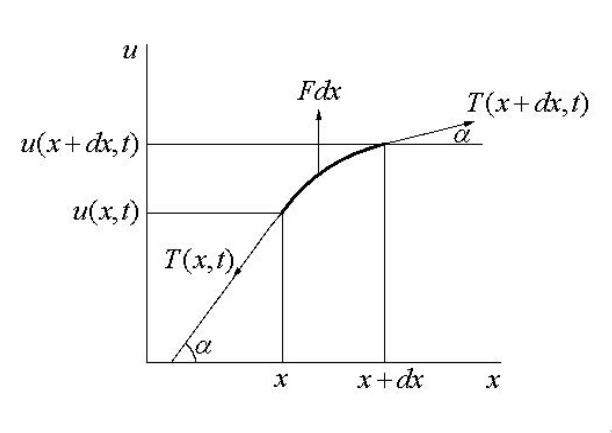
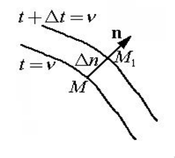
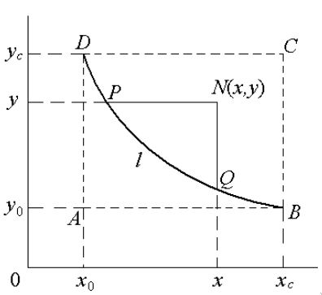
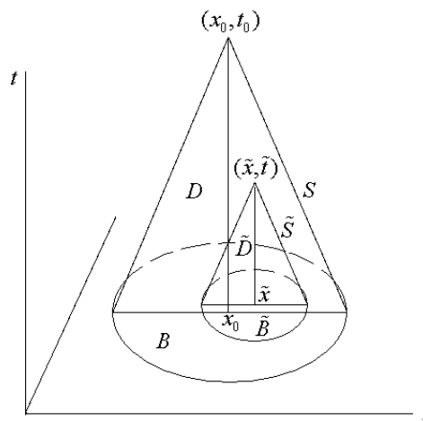
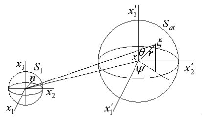

$\global\def\at#1#2{\left. #1 \right\rvert_{#2}}$
$\global\def\abs#1{\left\lvert #1 \right\rvert}$
$\global\def\norm#1{\left\lVert #1 \right\rVert}$
$\global\def\dp#1#2{#1 \cdot #2\,}$
$\global\def\vp#1#2{#1 \times #2\,}$
$\global\def\dv#1#2{\frac{d #1}{d #2}}$
$\global\def\pd#1#2{\frac{\partial #1}{\partial #2}}$
$\global\def\pdv2#1#2{\frac{\partial^2 #1}{\partial #2^2}}$
$\global\def\ppdv#1#2#3{\frac{\partial^2 #1}{\partial #2 \partial #3}}$
$\global\def\paren#1{\left( #1 \right)}$
$\global\def\mbox#1{\text{#1}}$
$\global\def\div{\text{div}\,}$
$\global\def\dsum{\displaystyle\sum\,}$
$\global\def\grad{\text{grad}\,}$
$\global\def\rot{\text{rot}\,}$
$\global\def\vb#1{\textbf{#1}}$
$\global\def\op#1{\mathrm{#1}\,}$
$\global\def\proj{\mathrm{proj}}$
$\global\def\bydef{\mathrm{def}}$
$\global\def\const{\text{const}\,}$
$\global\def\res{\text{res}\,}$
$\global\def\Res{\text{Res}\,}$
$\global\def\Re{\text{Re}\,}$
$\global\def\Im{\text{Im}\,}$
$\global\def\ch{\text{ch}\,}$
$\global\def\sh{\text{sh}\,}$
$\global\def\tg{\mathrm{tg}\,}$
$\global\def\argtg{\text{argtg}\,}$
1. Вывод уравнения малых колебаний струны
-
Определение: дифференциальное уравнение в частных производных порядка
$m$
-
Задана область $D \subset \R^n, \; n \geqslant 2$.
-
Точка $x \in D$, причём $x_1, \dots, x_n$ — её декартовые
прямоугольные координаты.
-
$p_{i_1 \dots i_n}$ — вещественные переменные, где
$i_j \in \mathbb{Z}^+, \; j = \overline{1,n}$, причём
для любого $p_{i_1 \dots i_n}$
\[
\sum_{j=1}^n i_j = k, \quad k = \overline{0,m},
\quad m \geqslant 1.
\]
-
$F(x_1, \dots, x_n, p_{i_1 \dots i_n}, \dots)$ — заданная
вещественная функция, для которой
\[
\exists p_{i_1 \dots i_n}, \quad \sum_{j=1}^n i_j = m:
\quad \pd{F}{p_{i_1 \dots i_n}} \neq 0.
\]
Равенство вида
\[
F\paren{
x, \dots, \frac{\partial^k u}{\partial x_1^{i_1}
\dots \partial x_n^{i_n}},
\dots} = 0
\]
называется дифференциальным уравнением в частных производных
(ДУЧП) порядка $m$ относительно функции $u \in C(D)$.
-
Определение: регулярное решение ДУЧП
Функция
\[
u: D \to \mathbb{R}, \quad u \in C^m(D),
\]
обращающая ДУЧП в тождество, называется
регулярным решением.
-
Определение: фундаментальное решение ДУЧП
Решение $u(x) \in C^m(D)$, теряющее свойство регулярности в
изолированных точках, линиях, поверхностях или многообразиях
особого рода, называется фундаментальным решением.
-
Определение: линейное ДУЧП
Дифференциальное уравнение
\[
F\paren{
x, \dots, \frac{\partial^k u}{\partial x_1^{i_1}
\dots \partial x_n^{i_n}}, \dots} = 0
\]
называется линейным, если $F$ — линейная функция
относительно всех своих переменных.
Обозначение: $\mathrm{L} u = f$, где $\mathrm{L}$ — линейный
дифференциальный оператор, $f$ — неоднородность.
-
Определение: квазилинейное ДУЧП
Дифференциальное уравнение
\[
F\paren{
x, \dots, \frac{\partial^k u}{\partial x_1^{i_1}
\dots \partial x_n^{i_n}}, \dots} = 0
\]
называется квазилинейным, если $F$ — линейная функция
относительно старших производных, то есть относительно переменных
$p_{i_1 \dots i_n}$, у которых $\sum\limits_{j=1}^n i_j = m$.
-
Общий вид линейного ДУЧП 2-го порядка
\[
\sum_{j,k=1}^n A_{jk}(x) \ppdv{u}{x_j}{x_k} +
\sum_{j=1}^n B_j(x) \pd{u}{x_j} + C(x) u = f(x),
\]
где $A_{jk}, B_j, C, f$ — заданные в $D$ вещественные функции.
Сокращенная форма записи:
\[
A_{\alpha \beta}(x) \ppdv{u}{x_\alpha}{x_\beta} +
B_\alpha(x) \pd{u}{x_\alpha} + C(x) u = f(x),
\quad \alpha,\beta = \overline{1,n}.
\]
-
Лемма о симметричности матрицы коэффициентов линейного ДУЧП 2-го
порядка
Матрица коэффициентов $A$ линейного ДУЧП 2-го порядка
\[
A_{\alpha \beta}(x) \ppdv{u}{x_\alpha}{x_\beta} +
B_\alpha(x) \pd{u}{x_\alpha} + C(x) u = f(x),
\quad \alpha,\beta = \overline{1,n}.
\]
симметрична.
Из непрерывности функции $u$ следует равенство смешанных
производных:
\[
\ppdv{u}{x_j}{x_k} = \ppdv{u}{x_k}{x_j},
\quad j,k = \overline{1,n},
\]
причём
\[
\ppdv{u}{x_j}{x_k} = \ppdv{u}{x_k}{x_j} = \frac{1}{2}
\paren{\ppdv{u}{x_j}{x_k} + \ppdv{u}{x_k}{x_j}}.
\]
Тогда
\[
\begin{aligned}
A_{jk} \ppdv{u}{x_j}{x_k} + A_{kj} \ppdv{u}{x_k}{x_j}
&=
\frac{A_{jk}}{2} \paren{\ppdv{u}{x_j}{x_k}
+ \ppdv{u}{x_k}{x_j}}
+ \frac{A_{kj}}{2} \paren{\ppdv{u}{x_j}{x_k}
+ \ppdv{u}{x_k}{x_j}} \\
&=
\frac{A_{jk} + A_{kj}}{2}
\paren{\ppdv{u}{x_j}{x_k} + \ppdv{u}{x_k}{x_j}} \\
&=
\frac{A_{jk} + A_{kj}}{2}
\ppdv{u}{x_j}{x_k} + \frac{A_{jk} + A_{kj}}{2} \ppdv{u}{x_k}{x_j},
\end{aligned}
\]
откуда $A_{jk} = A_{kj}$.
-
Уравнение колебательного процесса
\[
\rho \pdv2{u}{t} - \nabla \cdot (p \nabla u) + qu = f(x,t),
\]
где
-
$p(x), \; q(x), \; \rho(x)$ определяются свойствами среды,
-
$f(x,t)$ — интенсивность внешнего возмущения,
-
$u(x,t)$ — отклонение точки $x$ в момент времени $t$ от
положения равновесия.
-
Определение: струна
Струна — упругая нить, не сопротивляющаяся изгибу.
-
Вывод уравнения малых поперечных колебаний струны
Малые колебания струны характеризуются условием
\[
\abs{\tg \alpha} = \abs{\pd{u}{x}} \ll 1,
\]
где $u = u(x,t)$ — уравнение положения струны в момент времени
$t$.

Из определения струны следует, что натяжение струны $T(x,t)$ в точке
$x$ в момент времени $t$ направлено по касательной. Кроме того, любой
участок струны $(a,b)$ при малом отклонении от прямолинейного
положения равновесия практически сохраняет свою длину:
\[
\int\limits_a^b \sqrt{1 + \paren{\pd{u}{x}}^2} dx
\approx \int\limits_a^b dx = b - a = l_0.
\]
В момент времени $t$ натяжение струны можно представить в виде
\[
T = T_0 + T_1,
\]
где $T_0$ — натяжение струны в начальный момент времени
$t = 0$, а $T_1$ — дополнительное усилие в результате
отклонения струны от положения равновесия.
По закону Гука
\[
T_1 = E \frac{\Delta l}{l_0} S, \quad \text{где } \Delta l = l - l_0.
\]
Полагая, что
\[
E \abs{\frac{\Delta l}{l_0}} S \ll T_0, \quad \text{ или, иначе, }
\quad \abs{\frac{\Delta l}{l_0}} \ll \frac{T_0}{ES},
\]
получаем
\[
\abs{T} \approx T_0 = \const.
\]
Пусть $F(x,t)$ — плотность внешних сил в точке $x$ в момент
времени $t$, направленных перпендикулярно оси $x$, а $\rho(x)$ —
линейная плотность в точке $x$, то есть $\rho dx$ — масса
элемента $dx$.
Согласно закону Ньютона, проецируя все силы на вертикальную ось,
получим
\[
\at{T \sin\alpha}{x + dx} - \at{T \sin\alpha}{x} + F(x,t) dx
= \rho(x) dx \pdv2{u}{t}.
\]
Так как при малых $\alpha$
\[
\sin\alpha \sim \alpha \sim \tg\alpha \sim \pd{u}{x},
\qquad \abs{T} \approx T_0,
\]
то
\[
\rho \pdv2{u}{t} - T_0 \frac{1}{dx}
\paren{\pd{u(x + dx, t)}{x} - \pd{u(x,t)}{x}} = F(x, t).
\]
При $dx \to 0$ приходим к уравнению вынужденных малых поперечных
колебаний струны:
\[
\rho \pdv2{u}{t} - T_0 \pdv2{u}{x} = F(x,t).
\]
-
Уравнение вынужденных малых поперечных колебаний струны
\[
\rho \pdv2{u}{t} - T_0 \pdv2{u}{x} = F(x,t),
\]
где
-
$\rho(x)$ — линейная плотность струны;
-
$T_0$ — сила натяжения струны в момент времени $t = 0$;
-
$F(x,t)$ — плотность внешних сил в точке $x$ в момент
времени $t$.
-
Одномерное волновое уравнение
\[
\pdv2{u}{t} - a^2 \pdv2{u}{x} = f(x,t),
\quad \text{где} \quad a = \sqrt{\frac{T_0}{\rho}},
\quad f(x,t) = \frac{F(x,t)}{\rho},
\]
-
$\rho = \const$ — линейная плотность струны;
-
$T_0$ — сила натяжения струны в момент времени $t = 0$;
-
$F(x,t)$ — плотность внешних сил в точке $x$ в момент
времени $t$.
-
Уравнение малых свободных колебаний струны
Получается из одномерного волнового уравнения при отсутствии внешних
возмущений, то есть при $F(x,t) = 0$:
\[
\pdv2{u}{t} = a^2 \pdv2{u}{x},
\quad a = \sqrt{\frac{T_0}{\rho}},
\]
где $\rho = \const$ — линейная плотность струны, $T_0$ —
сила натяжения.
-
Двумерное волновое уравнение
\[
\pdv2{u}{t} = a^2 \paren{\pdv2{u}{x_1} + \pdv2{u}{x_2}} + f(x,t),
\quad a = \sqrt{\frac{T_0}{\rho}},
\quad f(x,t) = \frac{F(x,t)}{\rho}
\]
где $\rho = \const$ — линейная плотность струны, $T_0$ —
сила натяжения, $F(x,t)$ — плотность внешнего возмущения.
-
Трёхмерное волновое уравнение
\[
\pdv2{u}{t} = a^2 \paren{\pdv2{u}{x_1} + \pdv2{u}{x_2}
+ \pdv2{u}{x_3}} + f(x,t),
\quad a = \sqrt{\frac{T_0}{\rho}},
\quad f(x,t) = \frac{F(x,t)}{\rho}
\]
где $\rho = \const$ — линейная плотность струны, $T_0$ —
сила натяжения, $F(x,t)$ — плотность внешнего возмущения.
-
Определение: дивергенция
\[
\div \vec{v} \overset{\bydef}{=} \dp{\nabla}{\vec{v}}.
\]
-
Определение: ротор
\[
\rot \vec{v} \overset{\bydef}{=} \vp{\nabla}{\vec{v}}.
\]
-
Оператор Лапласа
\[
\Delta \overset{\bydef}{=} \pdv2{}{x_1} + \pdv2{}{x_2} + \pdv2{}{x_3}.
\]
-
Волновой оператор
\[
\square_a = \pdv2{}{t} - a^2 \Delta.
\]
В случае $a = 1$ принято $\square_1 \equiv \square$.
-
Единая запись волновых уравнений
\[
\pdv2{u}{t} = a^2 \Delta u + f,
\]
или, используя волновой оператор,
\[
\square_a u = f.
\]
-
Уравнение колебания струны в среде с сопротивлением
\[
\pdv2{u}{t} - a^2 \pdv2{u}{x} + h \pd{u}{t} = f(x,t),
\qquad h = \const.
\]
-
Уравнение продольного колебания упругого стержня
\[
\rho S \pdv2{u}{t} - \pd{}{x} \paren{ES \pd{u}{x}} = S F(x,t),
\]
где
-
$\rho$ — объемная плотность;
-
$E$ —
модуль Юнга
;
-
$S$ — площадь поперечного сечения;
-
$F(x,t)$ — сила на единицу объема.
2. Вывод уравнения теплопроводности (распространения тепла)
-
Закон Фурье
В направлении вектора нормали $\textbf{n}$ к поверхности $S$ поток
тепла в единицу времени $dt$ через элемент поверхности $dS$
равен
\[
dQ = -k \pd{u}{n} dS dt
\]
-
Определение: изотропность среды
Среда называется изотропной, если её физические свойства не
зависят от направления.
Пусть $c(x)$ — удельная теплоёмкость среды, $k(x)$ —
коэффициент теплопроводности. Если $c = \const$ и $k = \const$, то
среда изотропна.
-
Формула Гаусса-Остроградского
-
$\vb{n}$ — вектор внешней нормали к $S$.
\[
\iint\limits_S \dp{\vb{a}}{\vb{n}} dS
= \iiint\limits_V \div \vb{a} \, dV.
\]
-
Вывод уравнения теплопроводности (распространения тепла)
-
$V \subset \mathbb{R}^3$ — область, $S = \partial V$.
-
$u(x,t)$ — температура среды в точке $x \in V$ в момент
времени $t$.
-
Среда изотропна:
(нужно ли? Вроде можно и без этого условия
обойтись)
-
$\rho = \const$ — плотность;
-
$c = \const$ — удельная теплоёмкость;
-
$k = \const$ — коэффициент теплопроводности.
-
$F(x,t)$ — интенсивность источников тепла в точке $x$ в
момент времени $t$, то есть количество тепла, поглощаемого или
выделяемого в единицу времени в единице объёма.
Пусть за промежуток времени $(t_1, t_2)$
-
$Q_1$ — количество поступившего через $S$ в $V$ количество
тепла;
-
$Q_2$ — количество выделенного в $V$ внешними источниками
тепла;
-
$Q_3$ — суммарное изменение количества тепла в $V$.
В результате поступления тепла $Q_3$ за достаточно малый промежуток
времени $(t_1, t_2)$ приращение температуры равно
\[
du = u(x, t + dt) - u(x, t) \approx \pd{u}{t} dt,
\]
поэтому
\[
dQ_3 = c \, dm \, du \approx c \rho dV \pd{u}{t} dt,
\]
или
\[
Q_3 = \int\limits_{t_1}^{t_2} dt \iiint\limits_V c \rho \pd{u}{t} dV.
\]
Так как $k > 0$, то из закона Фурье
\[
dQ_1 = -k \pd{u}{n} dS dt
\]
следует, что при росте температуры в направлении вектора $\vb{n}$
(то есть $\pd{u}{n} \gt 0$) за промежуток времени $(t_1, t_2)$ поток
тепла имеет противоположное направление ($dQ_1 < 0$).
Пусть $\vb{n}$ — внешняя нормаль к $S$, тогда по закону Фурье
через $S$ в $V$ за промежуток времени $(t_1, t_2)$ поступает
количество тепла
\[
Q_1 = \int\limits_{t_1}^{t_2} dt \iint\limits_S k \pd{u}{n} dS
= \int\limits_{t_1}^{t_2} dt
\iint\limits_S \dp{k \nabla u}{\vb{n}} dS.
\]
В силу формулы Гаусса-Остроградского
\[
Q_1 = \int\limits_{t_1}^{t_2} dt
\iiint\limits_V \dp{\nabla}{(k \nabla u)} dV.
\]
Кроме того, внешние источники за время $dt$ выделяют количество тепла
\[
Q_2 = \int\limits_{t_1}^{t_2} dt \iiint\limits_V F(x,t) dV.
\]
Составляя баланс тепла, получаем
\[
Q_3 = Q_1 + Q_2, \qquad Q_3 - Q_1 - Q_2 = 0,
\]
или
\[
\int\limits_{t_1}^{t_2} dt \iiint\limits_V
\paren{c \rho \pd{u}{t} - \dp{\nabla}{k \nabla u} - F(x,t)} dV = 0,
\]
откуда, в силу произвольности промежутка времени $(t_1, t_2)$ и
области $V$, заключаем, что
\[
c \rho \pd{u}{t} - \dp{\nabla}{k \nabla u} - F(x,t) = 0.
\]
Это — уравнение теплопроводности.
Я не уверен, но, кажется, можно сюда добавить характеристику
поглощения среды $q = q(x)$; тогда, обозначив количество
поглощённого средой тепла за промежуток времени $(t_1, t_2)$ как
$Q_4$, можно записать
\[
Q_4 = \int\limits_{t_1}^{t_2} dt \iiint\limits_V q(x) u(x,t) dV,
\]
а суммарное изменение количества тепла запишется как
\[
Q_3 = Q_1 + Q_2 - Q_4.
\]
-
Уравнение теплопроводности для неоднородной среды
-
$u = u(x,t)$ — температура среды в точке $x$ в момент
времени $t$;
-
$\rho = \rho(x)$ — плотность среды;
-
$c = c(x)$ — удельная теплоёмкость среды;
-
$k = k(x)$ — коэффициент теплопроводности среды;
-
$F(x,t)$ — интенсивность внешних источников тепла.
\[
c \rho \pd{u}{t} - \dp{\nabla}{k \nabla u} - F(x,t) = 0,
\]
-
Уравнение теплопроводности для однородной среды
-
$u = u(x,t)$ — температура среды в точке $x$ в момент
времени $t$;
-
$\rho = \const$ — плотность среды;
-
$c = \const$ — удельная теплоёмкость среды;
-
$k = \const$ — коэффициент теплопроводности среды;
-
$F(x,t)$ — интенсивность внешних источников тепла.
\[
\pd{u}{t} - a^2 \Delta u = f, \quad \text{где } \quad
a^2 = \frac{k}{c \rho}, \quad f = \frac{F}{c \rho},
\]
-
Закон Нэрнста
В направлении вектора нормали $\vb{n}$ к поверхности $S$ поток
частиц за единицу времени $dt$ через элемент поверхности $dS$ равен
\[
dQ = -D \pd{u}{n} dS dt,
\]
где
-
$u(x,t)$ — плотность частиц в точке $x$ в момент времени
$t$,
-
$D(x)$ — коэффициент диффузии.
-
Уравнение диффузии
\[
\rho \pd{u}{t} - \nabla \cdot (D \nabla u) + qu = F(x,t),
\]
где
-
$u = u(x,t)$ — плотность частиц в точке $x$ в момент времени
$t$;
-
$\rho = \rho(x)$ — коэффициент пористости среды;
-
$D = D(x)$ — коэффициент диффузии;
-
$q = q(x)$ - характеристика поглощения среды.
-
Стационарное уравнение
Для стационарных процессов $F(x,t) = F(x), \; u(x,t) = u(x)$,
\[
\pd{u}{t} \equiv 0, \quad \pdv2{u}{t} \equiv 0,
\]
поэтому как уравнение колебаний, так и уравнение теплопроводности
(диффузии) принимают вид
\[
- \nabla \cdot (k \nabla u) + qu = F(x).
\]
-
Уравнение Пуассона
Стационарное уравнение
\[
- \nabla \cdot (k \nabla u) + qu = F(x).
\]
при $k = \const, \; q = 0$ сводится к уравнению Пуассона:
\[
\Delta u = -f, \quad f = \frac{F}{k}.
\]
-
Уравнение Лапласа
Уравнение Пуассона
\[
\Delta u = -f
\]
при $f = 0$ называется уравнением Лапласа:
\[
\Delta u = 0.
\]
3. Классификация линейных дифференциальных уравнений в частных
производных 2-го порядка. Примеры
-
Определение: тип квазилинейного ДУЧП 2-го порядка
Рассмотрим квазилинейное ДУЧП 2-го порядка
\[
A_{\alpha \beta}(x) \ppdv{u}{x_\alpha}{x_\beta} +
\Phi(x_1, \dots, x_n, u, \pd{u}{x_1}, \dots, \pd{u}{x_n}) = 0,
\quad \alpha,\beta = \overline{1,n}.
\]
Рассмотрим матрицу
\[
A = \left(
\begin{array}{cccc}
A_{11} & A_{12} & \dots & A_{1n} \\
A_{21} & A_{22} & \dots & A_{2n} \\
\dots & \dots & \dots & \dots \\
A_{n1} & A_{n2} & \dots & A_{nn}
\end{array}
\right).
\]
Пусть в точке $x$ матрица $A$ имеет $\alpha$ положительных, $\beta$
отрицательных и $\gamma$ нулевых характеристических чисел. Тогда
говорят, что в рассматриваемой точке $x$ линейное уравнение
принадлежит к типу $(\alpha, \, \beta, \, \gamma)$.
-
Определение: гиперболический, параболический и эллиптический тип
квазилинейных ДУЧП 2-го порядка
-
$(\alpha, \beta, \gamma)$ — матрица $A$ квазилинейного
ДУЧП 2-го порядка имеет $\alpha$ положительных, $\beta$
отрицательных и $\gamma$ нулевых собственных чисел.
-
$(n-1, 1, 0)$ или $(1, n-1, 0)$ — гиперболический
тип.
Колебание струны
\[
\pdv2{u}{t} - a^2 \pdv2{u}{x} = f(x,t).
\]
Волновое уравнение
\[
\pdv2{u}{t} - a^2 \Delta u = f(x,t).
\]
-
$(n-1, 0, 1)$ или $(0, n-1, 1)$ — параболический тип.
Уравнение теплопроводности (диффузии)
\[
\pd{u}{t} - a^2 \Delta u = f(x,t).
\]
-
$(n, 0, 0)$ или $(0, n, 0)$ — эллиптический тип.
Уравнение Пуассона
\[
\Delta u = -f.
\]
Матрица $A$ уравнения Пуассона имеет вид
\[
A = \left(
\begin{array}{cccc}
1 & 0 & \dots & 0 \\
0 & 1 & \dots & 0 \\
\dots & \dots & \dots & \dots \\
0 & 0 & \dots & 1
\end{array}
\right);
\]
её характеристический многочлен
\[
p(\lambda) = \det \paren{A - \lambda I} = (1 - \lambda)^n
\]
имеет $n$ положительных корней $\lambda = 1$, то есть тип
уравнения — $(n, 0, 0)$.
-
Определение: квазилинейное ДУЧП смешанного типа
Квазилинейные ДУЧП, меняющие тип в зависимости от $x$, называются
уравнениями смешанного типа.
4. Краевые условия и краевые задачи (колебание струны конечной длины,
задачи Дирихле и Неймана для неоднородного уравнения Лапласа)
-
Определение: краевое условие
-
Область $\Omega \subset \mathbb{R}^n$ с границей
$\Gamma = \partial\Omega$.
-
Линейное ДУЧП $\mathrm{L} u = f(x)$, где $x \in \Omega$.
Равенства
\[
G_k \at{u}{\Gamma} = \varphi_k(x),
\quad k = \overline{1,l},
\quad x \in \Gamma,
\]
где $G_k$ — дифференциальные операторы, называются краевыми
условиями.
Задача об интегрировании ДУЧП
\[
\mathrm{L} u = f(x), \quad x \in \Omega
\]
при условиях
\[
G_k \at{u}{\Gamma} = \varphi_k(x),
\quad k = \overline{1,l},
\quad x \in \Gamma,
\]
называется краевой задачей.
-
Пример краевой задачи: колебание струны конечной длины
Рассмотрим уравнение колебания струны
\[
\pdv2{u}{t} - a^2 \pdv2{u}{x} = f(x,t).
\]
Функцию $u(x,t)$ будем искать в области
$D: \set{x \in (0,l), \; t \gt 0}$
Зададим начальные
\[
\at{u}{t=0} = \varphi_1(x), \quad \at{\pd{u}{t}}{t=0} = \varphi_2(x)
\]
и граничные
\[
\at{u}{x=0} = \psi_1(t), \quad \at{u}{x=l} = \psi_2(t)
\]
условия.
Можно показать, что при достаточно слабых ограничениях на данные
исходное волновое уравнение имеет одно и только одно решение,
удовлетворяющее начальным и граничным условиям. Иными словами, данная
краевая задача содержит всю информацию, необходимую для исследования
явления колебания струны (решение единственно) и не содержит
избыточной, противоречивой информации (решение существует).
Пусть ищем решение $u \in C^2(D) \cap C(\overline{D})$. Тогда из
непрерывности $u$ на границе $\partial D$ следуют условия
\[
\begin{aligned}
\varphi_1(0) &= \psi_1(0), &&(t = 0, x = 0), \\
\varphi_1(l) &= \psi_2(0), &&(t = 0, x = l).
\end{aligned}
\]
Из условия непрерывности частных производных
${\displaystyle \pd{u}{t}, \pd{u}{x}}$ на границе $\partial D$
следуют условия
\[
\begin{aligned}
\varphi_2(0) &= \psi_1'(0), &&(t = 0, x = 0), \\
\varphi_2(l) &= \psi_2'(0), &&(t = 0, x = l).
\end{aligned}
\]
Из непрерывности частных производных
${\displaystyle \pdv2{u}{t}, \pdv2{u}{x}}$ на границе $\partial D$
следуют условия
\[
\begin{aligned}
\psi_1''(0) - a^2 \varphi_1''(0) &= f(0, 0), \\
\psi_2''(0) - a^2 \varphi_1''(l) &= f(l, 0).
\end{aligned}
\]
Разве вторые частные производные непрерывны на границе? Мы же ищем
функцию в классе $C^2(D) \cap C(\overline{D})$, то есть мы явно
требуем только их непрерывности непосредственно в области $D$, но
не на границе.
-
Задача Дирихле для уравнения Пуассона
-
Тело занимает область $\Omega \subset \mathbb{R}^3$ с границей
$\Gamma = \partial \Omega$.
-
В теле установилось стационарное распределение температур.
-
Возможно измерить температуру на границе:
\[
\at{u}{\Gamma} = \varphi(x), \quad x \in \Gamma.
\]
-
Случай неоднородной и анизотропной среды.
Стационарное распределение температур под действием внешних
источников тепла интенсивности $F(x)$ описывается уравнением
эллиптического типа:
\[
\sum_{j,k=1}^3 \pd{}{x_j} \paren{A_{jk}(x) \pd{u}{x_k}} = f(x),
\]
где $f(x)$ отличается от $F(x)$ некоторым постоянным множителем.
Задача интегрирования
\[
\sum_{j,k=1}^3 \pd{}{x_j} \paren{A_{jk}(x) \pd{u}{x_k}} = f(x),
\]
при граничных условиях
\[
\at{u}{\Gamma} = \varphi(x), \quad x \in \Gamma.
\]
называется задачей Дирихле в случае неоднородной и
анизотропной среды.
-
Случай неоднородной и изотропной среды при
$A_{jk} = \delta_{jk}$:
\[
\Delta u = f(x)
\quad \text{при} \quad
\at{u}{\Gamma} = \varphi(x),
\quad x \in \Gamma.
\]
-
Задача Неймана для уравнения Пуассона
-
Тело занимает область $\Omega \subset \mathbb{R}^3$ с границей
$\Gamma = \partial \Omega$.
-
В теле установилось стационарное распределение температур.
-
Известен тепловой поток через границу:
\[
\sum_{j,k=1}^3 \at{
A_{jk}(x) \pd{u}{x_k} \cos(\vb{n},x_j)
}{\Gamma} = \psi(x),
\]
причём $\psi(x)$ с точностью до константы совпадает с
интенсивностью потока тепла в точке $x \in \Gamma$, а $\vb{n}$
— внешняя нормаль.
-
Случай неоднородной и анизотропной среды.
Стационарное распределение температур под действием внешних
источников тепла интенсивности $F(x)$ описывается уравнением
эллиптического типа:
\[
\sum_{j,k=1}^3 \pd{}{x_j} \paren{A_{jk}(x) \pd{u}{x_k}} = f(x),
\]
где $f(x)$ отличается от $F(x)$ некоторым постоянным множителем.
Задача интегрирования
\[
\sum_{j,k=1}^3 \pd{}{x_j} \paren{A_{jk}(x) \pd{u}{x_k}} = f(x),
\]
при граничных условиях
\[
\sum_{j,k=1}^3 \at{
A_{jk}(x) \pd{u}{x_k} \cos(\vb{n},x_i)
}{\Gamma} = \psi(x),
\]
называется задачей Неймана в случае неоднородной и
анизотропной среды.
-
Случай неоднородной и изотропной среды при
$A_{jk} = \delta_{jk}$.
Граничное условие
\[
\sum_{j,k=1}^3 \at{
A_{jk}(x) \pd{u}{x_k} \cos(\vb{n},x_i)
}{\Gamma} = \psi(x)
\]
при $A_{jk} = \delta_{jk}$ можно переписать в виде
\[
\at{\pd{u}{\vb{n}}}{\Gamma} = \psi(x).
\]
Тогда задачу Неймана можно записать так:
\[
\Delta u = f(x)
\quad \text{при} \quad
\at{\pd{u}{\vb{n}}}{\Gamma} = \psi(x).
\]
5. Задача Коши для линейных уравнений 2-го порядка. Данные Коши,
поверхность Коши, вычисление первых производных на поверхности Коши
-
Постановка задачи Коши для линейного уравнения 2-го порядка
Рассмотрим линейное уравнение второго порядка:
\[
\sum_{k,j=1}^n A_{jk} \ppdv{u}{x_j}{x_k}
+ \sum_{j=1}^n B_j \pd{u}{x_j} + Cu = f(x).
\]
Пусть $\Gamma \subset \mathbb{R}^n$. С каждой точкой $x \in \Gamma$
свяжем направление $\lambda$, некасательное к $\Gamma$.
Постановка задачи Коши: в окрестности $\Gamma$ требуется
найти решение линейного ДУЧП, удовлетворяющее условиям Коши
\[
\at{u}{\Gamma} = \varphi_1(x),
\quad \at{\pd{u}{\lambda}}{\Gamma} = \varphi_2(x),
\]
где $\varphi_1(x) \in C^2(\Gamma), \; \varphi_2(x) \in C^1(\Gamma)$
называются данными Коши, а $\Gamma$ — поверхностью
Коши.
-
Вычисление первых производных на поверхности Коши
Зная условия Коши
\[
\at{u}{\Gamma} = \varphi_1(x),
\quad \at{\pd{u}{\lambda}}{\Gamma} = \varphi_2(x),
\]
можно найти значения всех первых производных искомой функции $u$ на
$\Gamma$.
Введём в точке $x \in \Gamma$ местную систему координат так, чтобы
координатные оси $\xi_1, \dots, \xi_{n-1}$ лежали в $(n-1)$-мерной
плоскости $\alpha_{n-1}$, касательной к $\Gamma$ в этой точке, а
$\xi_n$ — на нормали.
Так как $\at{u}{\Gamma} = \varphi_1(x)$, то
\[
\at{\pd{u}{\xi_k}}{\Gamma} = \pd{\varphi_1}{\xi_k},
\quad k = \overline{1,n-1}.
\]
Далее,
\[
\varphi_2(x) = \at{\pd{u}{\lambda}}{\Gamma} =
\sum_{k=1}^n \at{\pd{u}{\xi_k}}{\Gamma} \cos(\lambda, \xi_k).
\]
Так как $\lambda$ — некасательное направление, то
$\cos(\lambda, \xi_n) \neq 0$, и
\[
\begin{aligned}
\at{\pd{u}{\xi_n}}{\Gamma} &= \frac{1}{\cos(\lambda, \xi_n)} \left[
\varphi_2(x) - \sum_{k=1}^{n-1} \at{\pd{u}{\xi_k}}{\Gamma}
\cos(\lambda, \xi_k)
\right] \\
&= \frac{1}{\cos(\lambda, \xi_n)} \left[
\varphi_2(x) - \sum_{k=1}^{n-1} \pd{\varphi_1}{\xi_k}
\cos(\lambda, \xi_k)
\right]
\end{aligned}
\]
Теперь, зная все частные производные первого порядка в системе
координат $\xi$, в любой другой системе координат $x$ справедливо
\[
\at{\pd{u}{x_k}}{\Gamma} = \sum_{j=1}^n \at{\pd{u}{\xi_j}}{\Gamma}
\cos(\xi_j, x_k),
\quad k = \overline{1,n}.
\]
6. Вопросы существования, единственности и корректности краевой задачи.
Примеры: задача Адамара, задача Дирихле для гиперболического уравнения в
квадрате
-
Определение: полное пространство
Пространство называется полным, если любая фундаментальная
последовательность сходится в нём.
-
Определение: банахово пространство
Полное нормированное векторное пространство называется
банаховым.
-
Определение: гильбертово пространство
Полное унитарное векторное пространство называется
гильбертовым.
Всякое гильбертово пространство является банаховым. Обратное
неверно.
-
Определение: оператор краевой задачи
Обычно искомую функцию краевой задачи подчиняют некоторым ограничениям
общего характера, чтобы дать возможность рассматривать функцию как
элемент функционального пространства $B_1$.
Ставя задачу Дирихле для уравнения Лапласа, можно потребовать, чтобы
искомая функция была непрерывна в замкнутой области
$\overline{\Omega} = \Omega \cup \partial\Omega$. В этом случае
$B_1 = C(\overline{\Omega})$.
Интегралы
\[
\int\limits_\Omega u^2 dx, \qquad \int\limits_\Omega (\nabla u)^2 dx
\]
конечны. В этом случае можно рассматривать искомую функцию как
элемент такого Гильбертова пространства, в котором введена норма
\[
\norm{u}^2 = \int\limits_\Omega \paren{u^2 + (\nabla u)^2} d\Omega.
\]
Ограничения, накладываемые на искомую функцию $u(x)$, вынуждают
накладывать ограничения и на заданные функции, входящие в правые части
ДУЧП и краевых условий. Их можно рассматривать как элементы некоторого
другого функционального пространства $B_2$.
Если заданы $B_1$ и $B_2$, то можно ввести линейный оператор
\[
\mathrm{U} : B_1 \to B_2,
\]
используя который можно записать краевую задачу в виде
\[
\mathrm{U} u = \Phi, \quad u \in B_1, \quad \Phi \in B_2.
\]
Линейный оператор $\mathrm{U} : B_1 \to B_2$ называется
оператором данной краевой задачи.
-
Определение: корректная краевая задача в паре банаховых пространств
-
$B_1, \, B_2$ — банаховы пространства.
Краевая задача
\[
\mathrm{U} u = \Phi, \quad u \in B_1, \quad \Phi \in B_2
\]
называется
корректной в паре банаховых пространств $(B_1,
B_2)$, если
-
решение краевой задачи единственно в $B_1$;
-
решение существует при любых данных из $B_2$;
-
достаточно малому изменению данных в норме $B_2$ соответствует
сколь угодно малое изменение в норме $B_1$.
-
Определение: ограниченный линейный оператор
-
$M, N$ — линейные нормированные пространства с нормами
$\norm{\cdot}_M$ и $\norm{\cdot}_N$.
Линейный оператор
\[
\mathrm{L} : M \to N
\]
называется ограниченным из $M$ в $N$, если существует такое
число $C \gt 0$, что для любого $f \in M$ справедливо неравенство
\[
\norm{\mathrm{L} f}_N \leqslant C \norm{f}_M.
\]
-
Теорема о корректности краевой задачи (без доказательства)
Для того чтобы краевая задача
\[
\mathrm{U} u = \Phi, \quad u \in B_1, \quad \Phi \in B_2
\]
была корректна в паре банаховых пространств $(B_1, B_2)$, необходимо
и достаточно, чтобы существовал ограниченный оператор
\[
\mathrm{R} = \mathrm{U}^{-1} : B_2 \to B_1
\]
с областью определения $D(\mathrm{R}) = B_2$.
-
Пример Адамара некорректной краевой задачи
Рассмотрим
\[
\pdv2{u}{x} + \pdv2{u}{y} = 0.
\]
Поверхность Коши $\Gamma$ — ось $x$, условия Коши:
\[
\at{u}{y=0} = \varphi(x), \quad \at{\pd{u}{y}}{y=0} = 0.
\]
Будем искать решение в полосе $0 < y < \delta, \; \delta> 0$:
\[
\Omega = \set{(x,y): x \in \mathbb{R}, \; y \in (0, \delta)};
\]
в качестве $\lambda$ взято направление $y$.
Совокупность данных — единственная функция $\varphi(x)$:
\[
B_2 := \varphi(x) \in C(\mathbb{R}),
\quad \abs{\varphi(x)} \lt \infty;
\]
$B_1 := C(\Omega)$ — пространство функций, непрерывных и
ограниченных в $\Omega$.
За область определения оператора краевой задачи примем множество
функций $u(x,y) \in C(\Omega)$, имеющих непрерывные вторые производные
и удовлетворяющие условию
\[
\at{\pd{u}{y}}{y=0} = 0.
\]
Доказать единственность решения этой задачи.
Из единственности решения этой задачи следует, что функции
$\varphi(x) \equiv 0$ соответствует решение $u(x,y) \equiv 0$.
Рассмотрим теперь изменённые условия Коши
\[
\at{u}{y=0} = \frac{\cos nx}{n},
\quad \at{\pd{u}{y}}{y=0} = 0,
\quad n \in \mathbb{N}.
\]
Решением задачи является функция
\[
u(x,y) = \frac{\cos nx \, \ch ny}{n}.
\]
Изменение в норме $B_2$ мало:
\[
\norm{\varphi}_{B_2} = \norm{\frac{\cos nx}{n}}_{B_2} =
\max_{x \in \mathbb{R}} \abs{\frac{\cos nx}{n}} = \frac{1}{n}
\underset{n \to \infty}{\longrightarrow} 0.
\]
В то же время
\[
\norm{u}_{B_1} =
\max_{(x,y) \in \Omega} \abs{\frac{\cos nx \, \ch ny}{n}}
= \frac{\ch n\delta}{n}
\underset{n \to \infty}{\longrightarrow} \infty,
\]
следовательно, сколь угодно малые по норме $B_2$ изменения данных
могут вызвать сколь угодно большие по норме $B_1$ изменения решения.
-
Пример некорректной краевой задачи для гиперболического
уравнения (задача Дирихле в квадрате)
Рассмотрим уравнение:
\[
\ppdv{u}{x_1}{x_2} = 0;
\]
оно гиперболическое.
Проверим по определению:
\[
\begin{gathered}
A = \left(
\begin{array}{cc}
0 & 1/2 \\
1/2 & 0
\end{array}
\right), \\
\lambda^2 - 1/4 = 0 \implies \lambda = \pm 1/2.
\end{gathered}
\]
Поставим задачу Дирихле в квадрате
$\Omega = \set{(x_1, x_2): 0 \lt x_1 \lt 1, \; 0 \lt x_2 \lt 1}$:
\[
\begin{array}{ll}
\at{u}{x_1=0}=\varphi_1(x_2), & \at{u}{x_2=0}=\psi_1(x_1), \\
\at{u}{x_1=1}=\varphi_2(x_2), & \at{u}{x_2=1}=\psi_2(x_1).
\end{array}
\]
Зададим ограничения:
\[
B_1 := C(\overline{\Omega}), \quad B_2 := C(\Gamma_k),
\]
где $\Gamma_k$ — одна из сторон квадрата, $k=\overline{1,4}$.
Для непрерывности решения $u(x_1, x_2)$ должны выполняться условия
\[
\begin{array}{cc}
\varphi_1(0) = \psi_1(0), & \varphi_2(0) = \psi_1(1), \\
\varphi_1(1) = \psi_2(0), & \varphi_2(1) = \psi_2(1).
\end{array}
\]
Найдём общее решение гиперболического уравнения:
\[
\pd{}{x_1} \paren{\pd{u}{x_2}} = 0 \implies \pd{u}{x_2} = f(x_2),
\]
где $f$ — произвольная функция.
Введём обозначение:
\[
u(x_1, x_2) = F_1(x_1) + F_2(x_2), \quad \dv{F_2}{x_2} = f(x_2),
\]
где $F_1, \; F_2$ — произвольные функции.
Из первых двух условий краевой задачи следует:
\[
\begin{cases}
F_1(0) + F_2(x_2) = \varphi_1(x_2), \\
F_1(x_1) + F_2(0) = \psi_1(x_1)
\end{cases}
\implies
\begin{cases}
F_2(x_2) = \varphi_1(x_2) - F_1(0), \\
F_1(x_1) = \psi_1(x_1) - F_2(0)
\end{cases}
\]
причём одна из постоянных $F_1(0)$ и $F_2(0)$ остаётся произвольной.
Тогда
\[
u(x_1, x_2) = \varphi_1(x_2) + \psi_1(x_1) + A, \quad A = \const.
\]
Так как $u(0, 0) = \varphi_1(0)$, то $A = -\psi_1(0)$.
Из первого условия краевой задачи
\[
u(0, x_2) = \varphi_1(x_2), \implies u(0, 0) = \varphi_1(0),
\]
поэтому
\[
\varphi_1(0) = u(0, 0) = \varphi_1(0) + \psi_1(0) + A,
\]
откуда и следует $A = -\psi_1(0)$.
Таким образом,
\[
u(x_1, x_2) = \varphi_1(x_2) + \psi_1(x_1) - \psi_1(0).
\]
Но для выполнения, например, 4-го условия краевой задачи
\[
\at{u}{x_2=1} = \psi_2(x_1)
\]
требуется, чтобы
\[
u(1,1) = \varphi_1(1) + \psi_1(1) - \psi_1(0) = \varphi_2(1),
\]
что в общем случае не выполняется. Отсюда сразу можно сделать вывод,
что постановка задачи некорректна в паре $(B_1, B_2)$.
Дальше в конспекте Грекова идут рассуждения при $F_2(0) = 0$, из
чего небезосновательно можно сделать вывод, что всё, что было выше,
относится к случаю $F_1(0) = 0$. Эту гипотезу необходимо формально
проверить.
7. Теорема о сохранении типа линейного уравнения в частных производных
при невырожденном преобразовании независимых переменных
-
Определение: невырожденное преобразование независимых переменных
Преобразование
\[
\xi_r = \xi_r(x_1, \dots, x_n), \quad r = \overline{1,n}
\]
называется независимым в некоторой области изменения точки
$x$, если в ней оно взаимно однозначно, т.е. его якобиан не равен
нулю.
-
Теорема о сохранении типа квазилинейного ДУЧП при
невырожденном преобразовании независимых переменных
Тип квазилинейного ДУЧП
\[
A_{\alpha \beta} \ppdv{u}{x_\alpha}{x_\beta}
+ \Phi \paren{x, u, \pd{u}{x_1}, \dots, \pd{u}{x_n}} = 0,
\quad \alpha,\beta = \overline{1,n},
\]
не меняется при невырожденном преобразовании независимых
переменных
\[
\xi_r = \xi_r(x_1, \dots, x_n), \quad r = \overline{1,n}.
\]
Найдём вид уравнения, полученного из исходного невырожденным
преобразованием.
Пусть все $\xi_r$ имеют непрерывные вторые производные. Тогда
\[
\begin{gathered}
\pd{u}{x_\beta} = \pd{u}{\xi_\gamma} \pd{\xi_\gamma}{x_\beta}, \\
\ppdv{u}{x_\alpha}{x_\beta} = \pd{}{x_\alpha}
\paren{\pd{u}{\xi_\gamma} \pd{\xi_\gamma}{x_\beta}}
= \ppdv{u}{\xi_\mu}{\xi_\gamma} \pd{\xi_\mu}{x_\alpha}
\pd{\xi_\gamma}{x_\beta} + \pd{u}{\xi_\gamma}
\ppdv{\xi_\gamma}{x_\alpha}{x_\beta},
\end{gathered}
\]
где $\mu, \gamma = \overline{1,n}$. Квазилинейное уравнение тогда
запишется в виде
\[
A_{\alpha \beta} \pd{\xi_\gamma}{x_\beta} \pd{\xi_\mu}{x_\alpha}
\ppdv{u}{\xi_\gamma}{\xi_\mu}
+
A_{\alpha \beta} \pd{u}{\xi_\gamma}
\ppdv{\xi_\gamma}{x_\alpha}{x_\beta}
+ \Phi = 0.
\]
Введём обозначения:
\[
\begin{gathered}
\widetilde{A}_{\gamma \mu} := A_{\alpha \beta}
\pd{\xi_\gamma}{x_\beta}
\pd{\xi_\mu}{x_\alpha}, \quad
\Phi_1 := \Phi + A_{\alpha \beta}
\ppdv{\xi_\gamma}{x_\alpha}{x_\beta}
\pd{u}{\xi_\gamma},
\end{gathered}
\]
тогда исходное уравнение примет вид
\[
\widetilde{A}_{\gamma \mu} \ppdv{u}{\xi_\gamma}{\xi_\mu}
+ \Phi_1 \paren{\xi_1, \dots, \xi_n, u, \pd{u}{\xi_1}, \dots,
\pd{u}{\xi_n}} = 0.
\]
Матрица $\widetilde{A}_{\gamma \mu}$ симметрична.
\[
\widetilde{A}_{\gamma \mu} = A_{\alpha \beta}
\pd{\xi_\gamma}{x_\beta} \pd{\xi_\mu}{x_\alpha}
= A_{\beta \alpha} \pd{\xi_\mu}{x_\alpha}
\pd{\xi_\gamma}{x_\beta}.
\]
В последней сумме поменяем местами $\alpha$ и $\beta$:
\[
\widetilde{A}_{\gamma \mu} = A_{\alpha \beta}
\pd{\xi_\mu}{x_\beta} \pd{\xi_\gamma}{x_\alpha} =
\widetilde{A}_{\mu \gamma}, \overset{\bydef}{\implies}
\mbox{матрица $\widetilde{A}$ симметрична}.
\]
Из симметричности матрицы $\widetilde{A}$ следует, что квазилинейное
ДУЧП после невырожденного преобразования остаётся квазилинейным
ДУЧП.
Остаётся проверить тип полученного ДУЧП.
Пусть $J$ — матрица Якоби преобразования $\xi$; оно
невырожденное, то есть $\det J \neq 0$, откуда следует существование
обратной матрицы $J^{-1}$. Тогда
\[
\widetilde{A} = J A J^T.
\]
Пусть невырожденное линейное преобразование с матрицей $\Sigma$
преобразовывает матрицу $A$ в диагональную матрицу $D$, то есть
\[
A = \Sigma D \Sigma^T.
\]
Тогда
\[
\widetilde{A} = J \Sigma D \Sigma^T J^T = (J \Sigma) D (J \Sigma)^T,
\]
то есть матрица $\widetilde{A}$ сводится невырожденным
преобразованием с матрицей $J\Sigma$ к той же диагональной матрице
$D$, поэтому количество положительных, отрицательных и нулевых
собственных чисел матриц $A$ и $\widetilde{A}$ совпадают.
8. Уравнение характеристик, характеристическая поверхность.
Инвариантность характеристик при преобразовании независимых переменных
-
Определение: уравнение характеристик
Рассмотрим квазилинейное уравнение
\[
A_{\alpha \beta} \ppdv{u}{x_\alpha}{x_\beta} +
\Phi\paren{x, u, \pd{u}{x_1}, \dots, \pd{u}{x_n}} = 0,
\quad \alpha, \beta = \overline{1,n}.
\]
Уравнение
\[
A_{\alpha \beta} \pd{\omega}{x_\alpha} \pd{\omega}{x_\beta} = 0
\]
называют уравнением характеристик исходного дифференциального
уравнения.
-
Определение: характеристическая поверхность (характеристика)
Если $\omega(x_1, \dots, x_n)$ удовлетворяет уравнению характеристик
\[
A_{\alpha \beta} \pd{\omega}{x_\alpha} \pd{\omega}{x_\beta} = 0,
\]
то поверхность
\[
\omega(x_1, \dots, x_n) = C = \const
\]
называется характеристической поверхностью
(характеристикой) исходного уравнения.
-
Определение: характеристическая форма
Квадратичная форма
\[
(At, t) = A_{\alpha \beta} t_\alpha t_\beta
\]
называется характеристической формой исходного квазилинейного
ДУЧП.
-
Свойство характеристик: инвариантность при преобразовании независимых
переменных
Пусть $\omega(x_1, \dots, x_n)$ — решение уравнения
\[
A_{\alpha \beta} \pd{\omega}{x_\alpha} \pd{\omega}{x_\beta} = 0,
\]
(другими словами, $\omega(x)$ — характеристика).
Тогда если преобразование (невырожденное?)
\[
\xi_\gamma = \xi_\gamma(x_1, \dots, x_n),
\quad \gamma = \overline{1,n}
\]
переводит функцию $\omega(x)$ в функцию
$\widetilde{\omega}(\xi_1(x), \dots, \xi_n(x))$, то функция
$\widetilde{\omega}$ является решением уравнения
\[
\widetilde{A}_{\alpha \beta} \pd{\widetilde{\omega}}{\xi_\alpha}
\pd{\widetilde{\omega}}{\xi_\beta} = 0,
\]
то есть является характеристикой преобразованного квазилинейного
ДУЧП.
Найдём производные:
\[
\pd{\omega}{x_\alpha} = \pd{\widetilde{\omega}}{\xi_\gamma}
\pd{\xi_\gamma}{x_\alpha},
\quad
\pd{\omega}{x_\beta} = \pd{\widetilde{\omega}}{\xi_\mu}
\pd{\xi_\mu}{x_\beta},
\]
тогда уравнение характеристик примет вид
\[
A_{\alpha \beta}
\pd{\widetilde{\omega}}{\xi_\gamma} \pd{\xi_\gamma}{x_\alpha}
\pd{\widetilde{\omega}}{\xi_\mu} \pd{\xi_\mu}{x_\beta}
=
\underbrace{
A_{\alpha \beta}
\pd{\xi_\gamma}{x_\alpha}
\pd{\xi_\mu}{x_\beta}
}_{\displaystyle \widetilde{A}_{\gamma \mu}}
\pd{\widetilde{\omega}}{\xi_\gamma}
\pd{\widetilde{\omega}}{\xi_\mu}
=
\widetilde{A}_{\gamma \mu}
\pd{\widetilde{\omega}}{\xi_\gamma}
\pd{\widetilde{\omega}}{\xi_\mu}
= 0.
\]
-
Имеют ли уравнения эллиптического типа вещественные характеристики?
Нет, не имеют: у уравнений эллиптического типа характеристическая
форма
\[
(At, t) = A_{\alpha \beta} t_\alpha t_\beta
\]
при вещественных $t_j$ обращается в нуль, если $t_j = 0$ для любых
$j$, следовательно, единственное уравнение характеристик
\[
A_{\alpha \beta} \pd{\omega}{x_\alpha} \pd{\omega}{x_\beta} = 0
\]
имеет единственное решение $\omega \equiv \const$, а, следовательно,
уравнение
\[
\omega = C
\]
не определяет поверхность.
9. Зависимость данных Коши на характеристической поверхности. Пример
уравнения теплопроводности
-
Зависимость данных Коши на характеристической поверхности
Пусть данные Коши заданы на достаточно гладкой
поверхности $\Gamma$, определяемой уравнением
\[
\mu(x_1, \dots, x_n) = 0,
\]
и имеют вид
\[
\at{u}{\Gamma} = \varphi_0(x),
\quad \at{\pd{u}{\lambda}}{\Gamma} = \varphi_1(x),
\]
где $\lambda$ — некасательное направление к $\Gamma$. Из данных
Коши можно найти все производные
${\displaystyle \pd{u}{x_j}}, \; j = \overline{1,n}$ на $\Gamma$.
Введём новую систему координат $\xi$: определим $\xi_1, \dots,
\xi_{n-1}$ произвольно, а $\xi_n := \mu$. Потребуем, чтобы
преобразование
\[
\xi_r = \xi_r(x_1, \dots, x_n), \quad r = \overline{1,n}
\]
было невырожденно, а функции ${\displaystyle \pdv2{\xi_j}{x_k}}$
— непрерывны. В новых координатах уравнение поверхность Коши
имеет вид
\[
\xi_n = 0,
\]
то есть в новой системе координат $\Gamma$ — координатная
поверхность.
Предположим теперь, что $\Gamma$ — характеристическая
поверхность. Тогда $\mu$ удовлетворяет уравнению характеристик:
\[
A_{\alpha \beta} \pd{\mu}{x_\alpha} \pd{\mu}{x_\beta} = 0,
\]
или, в новых координатах,
\[
\widetilde{A}_{\gamma \nu} \pd{\widetilde{\mu}}{\xi_\gamma}
\pd{\widetilde{\mu}}{\xi_\nu} = 0,
\]
причём
\[
\widetilde{A}_{\gamma \nu} = A_{\alpha \beta} \pd{\xi_\gamma}{x_\beta}
\pd{\xi_\nu}{x_\alpha}.
\]
В силу равенства $\xi_n = \mu$ коэффициент при
${\displaystyle \pdv2{u}{\xi_n}}$ обращается в нуль:
\[
\widetilde{A}_{nn} = A_{\alpha \beta} \pd{\xi}{x_\alpha}
\pd{\xi_n}{x_\beta}
= A_{\alpha \beta} \pd{\mu}{x_\alpha} \pd{\mu}{x_\beta} = 0.
\]
Следовательно, преобразованное квазилинейное уравнение
\[
\widetilde{A}_{\gamma \nu} \ppdv{u}{\xi_\gamma}{\xi_\nu}
+ \Phi_1 \paren{
\xi_1, \dots, \xi_n, u, \pd{u}{\xi_1}, \dots, \pd{u}{\xi_n}
} = 0
\]
является дифференциальным уравнением первого порядка по отношению к
производной по $\xi_n$.
Так как
-
${\displaystyle \at{u}{\Gamma} \text{ и }
\at{\pd{u}{\xi_j}}{\Gamma}}$ находятся из данных Коши;
-
${\displaystyle \at{\ppdv{u}{\xi_j}{\xi_k}}{\Gamma}}$ можно найти
для любых $j,k$, кроме $j=k=n$, то есть можно найти производные по
направлениям, касательным к $\Gamma$,
то левая часть преобразованного квазилинейного уравнения вычисляются
на поверхности Коши $\Gamma$ через заданные функции $\varphi_0,
\varphi_1$. Подставляя найденные значения, заключаем, что на
характеристической поверхности некоторая заданная функция тождественно
равна нулю. Эта функция и является соотношением между данными Коши на
характеристике.
-
Пример зависимости данных Коши на характеристической поверхности
(уравнение теплопроводности)
Рассмотрим уравнение параболического типа
\[
\pd{u}{x_n} - \sum_{k=1}^{n-1} \pdv2{u}{x_k} = 0.
\]
Его характеристическое уравнение:
\[
-\sum_{k=1}^{n-1} \paren{\pd{\omega}{x_k}}^2 = 0;
\]
из него следует, что
\[
\pd{\omega}{x_k} = 0, \quad k = \overline{1, n-1},
\]
и, следовательно, характеристика представляется в виде
\[
\omega = f(x_n), \quad \text{где } f(x_n)
\text{ — произвольная функция}.
\]
Решения уравнения характеристической поверхности $\Gamma$
\[
f(x_n) = \const
\]
имеют вид $x_n = \const$. Таким образом, характеристики
параболического уравнения являются плоскостями.
Пусть поверхность Коши есть плоскость
\[
x_n = 0,
\]
а условия Коши имеют вид
\[
\at{u}{x_n=0} = \varphi_0(x_1, \dots, x_{n-1}), \quad
\at{\pd{u}{x_n}}{x_n=0} = \varphi_1(x_1, \dots, x_{n-1}).
\]
Исходное уравнение
\[
\pd{u}{x_n} - \sum_{k=1}^{n-1} \pdv2{u}{x_k} = 0
\]
при $x_n = 0$ принимает вид
\[
\varphi_1 = \sum_{k=1}^{n-1} \pdv2{\varphi_0}{x_k}.
\]
Отсюда следует, что достаточно задать только первое из двух условий
Коши:
\[
\at{u}{x_n=0} = \varphi_0(x_1, \dots, x_{n-1}).
\]
10. Поверхность слабого разрыва. Фронт волны. Скорость движения фронта
волны
-
Определение: слабый разрыв
Рассмотрим квазилинейное уравнение
\[
A_{\alpha \beta} \ppdv{u}{x_\alpha}{x_\beta} +
\Phi\paren{x, u, \pd{u}{x_1}, \dots, \pd{u}{x_n}} = 0,
\quad \alpha, \beta = \overline{1,n}.
\]
Пусть данные Коши заданы на достаточно гладкой поверхности $\Gamma$,
определяемой уравнением
\[
\mu(x_1, \dots, x_n) = 0.
\]
Говорят, что решение квазилинейного уравнения второго порядка имеет
на поверхности $\mu(x_1, \dots, x_n) = 0$ слабый разрыв, если
при переходе через эту поверхность это решение и его первые
производные непрерывны, а некоторые производные порядка выше первого
терпят разрыв первого рода.
-
Определение: фронт волны
Рассмотрим квазилинейное уравнение
\[
A_{\alpha \beta} \ppdv{u}{x_\alpha}{x_\beta} +
\Phi\paren{x, u, \pd{u}{x_1}, \dots, \pd{u}{x_n}} = 0,
\quad \alpha, \beta = \overline{1,n}.
\]
Пусть данные Коши заданы на достаточно гладкой поверхности $\Gamma$,
определяемой уравнением
\[
\mu(x_1, \dots, x_n) = 0.
\]
Пусть решение имеет на поверхности $\Gamma$ слабый разрыв. Обозначив
$x_n = t$, поверхность запишется в виде
\[
\mu(x_1, \dots, x_{n-1}, t) = 0,
\]
откуда, выразив $t$, получим
\[
t = \nu(x_1, \dots, x_{n-1}).
\]
Поверхность $\nu(x_1, \dots, x_{n-1}) = t = \const$ в пространстве
$\mathbb{R}^{n-1}$ называют фронтом волны.
-
Вывод формулы скорости движения фронта волны
Рассмотрим квазилинейное уравнение
\[
A_{\alpha \beta} \ppdv{u}{x_\alpha}{x_\beta} +
\Phi\paren{x, u, \pd{u}{x_1}, \dots, \pd{u}{x_n}} = 0,
\quad \alpha, \beta = \overline{1,n}.
\]
Пусть данные Коши заданы на достаточно гладкой поверхности $\Gamma$,
определяемой уравнением
\[
\mu(x_1, \dots, x_n) = 0.
\]
Пусть решение имеет на поверхности $\Gamma$ слабый разрыв; обозначим
фронт волны:
\[
t = \nu(x_1, \dots, x_{n-1}) = C.
\]

С течением времени фронт волны перемещается в направлении вектора
$\nabla \nu$. Для определения скорости движения фронта волны, возьмём
на нём некоторую точку $M$ и проведём из неё нормаль $\vb{n}$ в
направлении вектора $\nabla \nu$. Фронт волны в момент времени
$t + \Delta t$ пересечёт нормаль $\vb{n}$ в некоторой точке $M_1$,
отстоящей от $M$ на расстоянии $\Delta n$. Для скорости движения
фронта волны имеем
\[
w = \abs{\vb{w}} = \lim_{\Delta t \to 0} \frac{\Delta n}{\Delta t}
= \lim_{\Delta n \to 0} \frac{1}{\dfrac{\Delta t}{\Delta n}}
= \lim_{\Delta n \to 0} \frac{1}{\dfrac{\Delta \nu}{\Delta n}}
= \frac{1}{\dfrac{d \nu}{ d n}}
= \frac{1}{\abs{\nabla \nu}}.
\]
Следовательно, вектор скорости движения фронта волны определяется
формулой
\[
\vb{w}
= w \frac{\nabla \nu}{\abs{\nabla \nu}}
= \frac{1}{\abs{\nabla \nu}} \frac{\nabla \nu}{\abs{\nabla \nu}}
= \frac{\nabla \nu}{\abs{\nabla \nu}^2}.
\]
11. Приведение уравнений второго порядка к каноническому виду. Случай
двух переменных
-
Приведение уравнений второго порядка к каноническому виду
Рассмотрим линейное невырожденное преобразование
\[
\xi = Jx.
\]
Зафиксируем точку $x$; в ней можно выбрать $J$ так, чтобы
\[
\widetilde{A} = JAJ^T, \; \widetilde{A}_{ij} = \nu_j \delta_{ij},
\]
где $\delta_{ij}$ — символ Кронекера, то есть $\widetilde{A}$
— диагональная. Тогда квазилинейное уравнение
\[
A_{\alpha \beta} \ppdv{u}{x_\alpha}{x_\beta}
+ \Phi \paren{x, u, \pd{u}{x_1}, \dots, \pd{u}{x_n}} = 0
\]
в выбранной точке $x$ принимает вид
\[
\sum_{k=1}^n \nu_k \pdv2{u}{\xi_k}
+ \Phi_1 \paren{\xi, u, \pd{u}{\xi_1}, \dots, \pd{u}{\xi_n}} = 0,
\]
где $\nu_k = \widetilde{A}_{kk}$.
Такой вид уравнения 2-го порядка называется каноническим.
-
Закон инерции квадратичной формы (без доказательства)
Рассмотрим квазилинейное ДУЧП второго порядка в каноническом виде
\[
\sum_{k=1}^n \nu_k \pdv2{u}{\xi_k}
+ \Phi_1 \paren{\xi, u, \pd{u}{\xi_1}, \dots, \pd{u}{\xi_n}} = 0.
\]
Общее число положительных и отрицательных коэффициентов $\nu_k$,
равно как и их разность, не зависит от преобразования, приводящего
матрицу $A$ к диагональному виду.
Разность между числом положительных и отрицательных коэффициентов
$\nu_k$ называется сигнатурой.
-
Упрощение канонического вида линейного уравнения непараболического
типа
-
Приведение уравнений второго порядка к каноническому виду (cлучай двух
переменных)
Рассмотрим квазилинейное ДУЧП 2 порядка
\[
A \pdv2{u}{x} + 2B\ppdv{u}{x}{y} + C\pdv2{u}{y}
+ \Phi \paren{x,y,u, \pd{u}{x}, \pd{u}{y}} = 0.
\]
Найдём собственные числа:
\[
\abs{
\begin{array}{cc}
A - \lambda & B \\
B & C - \lambda
\end{array}
} = 0 \quad \implies \quad \lambda^2 - (A + C) \lambda - B^2 + AC = 0.
\]
Дискриминант $D = (A + C)^2 + 4 B^2 \geqslant 0$, поэтому корни
характеристического полинома вещественны.
По теореме Виета
\[
\lambda_1 \lambda_2 = AC-B^2.
\]
Классификация
-
Эллиптический тип
\[
B^2 - AC \lt 0 \iff \lambda_1 \lambda_2 \gt 0.
\]
Канонический вид эллиптического ДУЧП 2 порядка в случае двух
переменных:
\[
\pdv2{u}{\xi} + \pdv2{u}{\eta}
+ \Phi_1 \paren{\xi, \eta, u, \pd{u}{\xi}, \pd{u}{\eta}} = 0.
\]
-
Гиперболический тип
\[
B^2 - AC \gt 0 \iff \lambda_1 \lambda_2 \lt 0.
\]
Канонический вид гиперболического ДУЧП 2 порядка в случае двух
переменных:
\[
\pdv2{u}{\xi_1} - \pdv2{u}{\eta_1}
+ \Phi_3 \paren{\xi_1, \eta_1, u, \pd{u}{\xi_1}, \pd{u}{\eta_1}}
= 0
\]
или
\[
\ppdv{u}{\xi}{\eta}
+ \Phi_3 \paren{\xi, \eta, u, \pd{u}{\xi}, \pd{u}{\eta}} = 0
\]
-
Параболический тип
\[
B^2 - AC = 0 \iff \lambda_1 \lambda_2 = 0.
\]
Канонический вид параболического ДУЧП 2 порядка в случае двух
переменных:
\[
\pdv2{u}{\eta} + \Phi_2 \paren{
\xi,\eta,u, \pd{u}{\xi}, \pd{u}{\eta}
} = 0.
\]
-
Сведение уравнения характеристик для ДУЧП 2-го порядка к ОДУ
Рассмотрим уравнение характеристик для ДУЧП 2-го порядка
\[
A \paren{\pd{w}{x}}^2 + 2B \pd{w}{x} \pd{w}{y}
+ C \paren{\pd{w}{y}}^2 = 0
\]
и ОДУ
\[
A dy^2 - 2B dx dy + C dx^2 = 0.
\]
Тогда уравнение $\omega(x,y) = \const$ удовлетворяет уравнению
характеристик тогда и только тогда, когда оно удовлетворяет
приведённому ОДУ.
Рассмотрим уравнение характеристик для ДУЧП 2 порядка:
\[
A \paren{\pd{w}{x}}^2 + 2B \pd{w}{x} \pd{w}{y}
+ C \paren{\pd{w}{y}}^2 = 0.
\]
Пусть $\omega(x,y)$ — его решение. Рассмотрим
характеристику
\[
\omega(x,y) = \const.
\]
Вдоль неё
\[
\pd{\omega}{x} dx + \pd{\omega}{y} dy = 0.
\]
Это равенство можно переписать в виде
\[
\dp{\nabla \omega}{(dx,dy)} = 0,
\]
откуда можно сделать вывод, что вектор $(dx,dy)$ лежит в
плоскости, касательной к характеристике.
Направление $(dx,dy)$ называется характеристическим
направлением.
Также из равенства
\[
\pd{\omega}{x} dx + \pd{\omega}{y} dy = 0
\]
следует, что
\[
\left. \pd{\omega}{x} \middle/ \pd{\omega}{y} \right.
= -\frac{dy}{dx}.
\]
Эта замена приводит уравнение характеристик к виду
\[
A dy^2 - 2B dx dy + C dx^2 = 0;
\]
$\omega(x,y) = \const$ — его общий интеграл.
Пусть
\[
\omega(x,y) = \const
\]
является общим интегралом уравнения
\[
A dy^2 - 2B dx dy + C dx^2 = 0
\]
для любой точки $(x,y)$. Зафиксируем некоторую произвольную точку
$(x_0, y_0)$ и проведём через неё интегральную кривую
$\omega(x,y) = \const$, полагая
\[
\omega(x_0, y_0) = C_0.
\]
Тогда уравнение этой интегральной кривой:
\[
\omega(x,y) = C_0, \quad \text{или} \quad y = f(x, C_0).
\]
Учитывая, что
\[
\pd{\omega}{x} dx + \pd{\omega}{y} dy = 0 \implies
\left. \pd{\omega}{x} \middle/ \pd{\omega}{y} \right.
= -\frac{dy}{dx},
\]
для всех точек этой интегральной кривой справедливо
\[
A \paren{\dv{y}{x}}^2 - 2 B \dv{y}{x} + C
=
\left[
A
\paren{
-\left. \pd{\omega}{x} \middle/ \pd{\omega}{y} \right.
}^2
- 2B
\paren{
-\left. \pd{\omega}{x} \middle/ \pd{\omega}{y} \right.
}
+ C
\right]_{\displaystyle y = f(x, C_0)} = 0.
\]
Полагая $x = x_0$, окончательно получаем, что
\[
\left[
A \paren{\pd{w}{x}}^2 + 2B \pd{w}{x} \pd{w}{y}
+ C \paren{\pd{w}{y}}^2
\right]_{
\begin{aligned}
x &= x_0 \\
y &= y_0
\end{aligned}
} = 0
\]
в произвольной точке $(x_0, y_0)$. Таким образом, общий интеграл
$\omega(x,y) = \const$ ОДУ является характеристикой.
12. Канонический вид трёх типов уравнений в случае двух переменных.
Пример гиперболического уравнения
-
Вывод канонического вида ДУЧП 2-го порядка эллиптического типа
(случай двух переменных)
Канонический вид ДУЧП 2-го порядка эллиптического типа в случае двух
переменных:
\[
\pdv2{u}{\xi} + \pdv2{u}{\eta}
+ \Phi_1 \paren{\xi, \eta, u, \pd{u}{\xi}, \pd{u}{\eta}} = 0.
\]
Расписать (Греков, с.37)
-
Вывод канонического вида ДУЧП 2-го порядка параболического типа
(случай двух переменных)
Канонический вид ДУЧП 2-го порядка параболического типа в случае двух
переменных:
\[
\pdv2{u}{\eta} + \Phi_2 \paren{
\xi,\eta,u, \pd{u}{\xi}, \pd{u}{\eta}
} = 0.
\]
Расписать (Греков, с.37)
-
Вывод канонического вида ДУЧП 2-го порядка гиперболического типа
(случай двух переменных)
Канонический вид ДУЧП 2-го порядка гиперболического типа в случае двух
переменных:
\[
\pdv2{u}{\xi_1} - \pdv2{u}{\eta_1}
+ \Phi_3 \paren{\xi_1, \eta_1, u, \pd{u}{\xi_1}, \pd{u}{\eta_1}} = 0
\]
или
\[
\ppdv{u}{\xi}{\eta}
+ \Phi_3 \paren{\xi, \eta, u, \pd{u}{\xi}, \pd{u}{\eta}} = 0
\]
Расписать (Греков, с.37)
-
Пример нахождения канонического вида: уравнение гиперболического типа
Рассмотрим ДУЧП 2-го порядка
\[
\pdv2{u}{x} - 2 \sin x \ppdv{u}{x}{y} - \cos^2 x \pdv2{u}{y}
- \cos x \pd{u}{y} = 0.
\]
Убедимся, что перед нами уравнение гиперболического типа:
\[
\begin{gathered}
A = 1, \quad B = -\sin x, \quad C = -\cos^2 x, \\
B^2 - AC = \sin^2 x + \cos^2 x = 1 > 0.
\end{gathered}
\]
Уравнение характеристик:
\[
\paren{\pd{w}{x}}^2 - 2 \sin x \pd{w}{x} \pd{w}{y} - \cos^2 x
\paren{\pd{w}{y}}^2 = 0,
\]
тогда $\omega = \const$ — общий интеграл ОДУ
\[
dy^2 + 2 \sin x dx dy - \cos^2 x dx^2 = 0.
\]
Так как
\[
\begin{aligned}
dy^2 + 2 \sin x dx dy - \cos^2 x dx^2
&= dy^2 + 2 \sin x dx dy + \sin^2 x dx^2 - dx^2 = 0 \\
&= \paren{dy + \sin x dx}^2 - dx^2,
\end{aligned}
\]
то
\[
dy = (- \sin x \pm 1) dx, \implies y = \cos x \pm x + \const.
\]
Матрица ДУЧП в новых координатах ищется по формулам
\[
\widetilde{A}_{\gamma \mu} = A_{\alpha \beta}
\pd{\xi_\gamma}{x_\beta} \pd{\xi_\mu}{x_\alpha}.
\]
Замена переменных
\[
\begin{gathered}
\xi = x + y - \cos x \\
\eta = x - y + \cos x
\end{gathered}
\]
даёт канонический вид:
\[
\ppdv{u}{\xi}{\eta} = 0.
\]
Другая замена
\[
\begin{gathered}
\xi = \xi_1 + \eta_1 \\
\eta = \xi_1 - \eta_1
\end{gathered}
\implies
\begin{gathered}
\xi_1 = \frac{1}{2}(\xi + \eta) \\
\eta_1 = \frac{1}{2}(\xi - \eta)
\end{gathered}
\]
даёт другой канонический вид:
\[
\pdv2{u}{\xi_1} - \pdv2{u}{\eta_1} = 0.
\]
13. Решение задачи Коши для неограниченной струны. Физическое
истолкование решения. Понятие обобщённого решения задачи Коши
-
Задача о неограниченной струне: применение метода характеристик
Уравнение свободных колебаний:
\[
\pdv2{u}{t} - a^2 \pdv2{u}{x} = 0, \quad a=\sqrt{\dfrac{T}{\rho}};
\]
его уравнение характеристик:
\[
\paren{\pd{w}{t}}^2 - a^2 \paren{\pd{w}{x}}^2 = 0.
\]
Сведём его к ОДУ:
\[
dx^2 - a^2 dt^2 = 0;
\]
его общий интеграл: $x \pm at = \const$.
Используя замену
\[
\begin{cases}
\xi = x - at \\
\eta = x + at,
\end{cases}
\]
получим канонический вид уравнения:
\[
\ppdv{u}{\xi}{\eta} = 0,
\]
откуда
\[
u = g_1(\xi) + g_2(\eta), \implies u = g_1(x - at) + g_2(x + at).
\]
Физический смысл
При движении наблюдателя со скоростью $a$ в положительном направлении
оси $x$ наблюдатель будет видеть то же положение точки, которое он
видел в момент $t = 0$.
Явление, описываемое функцией $u_1 = g_1(x + at)$, называется
распространением прямой волны, а функцией $u_2 = g_2(x - at)$
— обратной волны.
-
Вывод обобщённого решения задачи Коши для неограниченной струны
Поставим для
\[
\pdv2{u}{t} - a^2 \pdv2{u}{x} = 0, \quad a=\sqrt{\frac{T}{\rho}}
\]
задачу Коши с начальными условиями:
\[
\at{u}{t=0} = \psi_1(x), \qquad \at{\pd{u}{t}}{t=0} = \psi_2(x).
\]
Используя метод характеристик, можем найти, что
\[
u = g_1(x - at) + g_2(x + at).
\]
Из начальных условий получаем, что
\[
\begin{aligned}
\at{u}{t=0} = \psi_1(x) &= g_1(x) + g_2(x) \\
\at{\pd{u}{t}}{t=0} = \psi_2(x) &= -a (g_1'(x) - g_2'(x)),
\end{aligned}
\]
откуда
\[
\left\{
\begin{aligned}
g_1(x) + g_2(x) &= \psi_1(x) \\
g_1(x) - g_2(x) &= -\frac{1}{a} \int\limits_{x_0}^x \psi_2(z) dz,
\end{aligned}
\right.
\]
или, выражая $g_1$ и $g_2$,
\[
\left\{
\begin{aligned}
g_1(x) &= \frac{1}{2}\psi_1(x)
- \frac{1}{2a}\int\limits_{x_0}^x \psi_2(z)dz \\
g_2(x) &= \frac{1}{2}\psi_1(x)
+ \frac{1}{2a}\int\limits_{x_0}^x \psi_2(z)dz.
\end{aligned}
\right.
\]
Тогда можно записать решение задачи Коши в форме Даламбера:
\[
u(x,t) = g_1(x - at) + g_2(x + at)
= \dfrac{1}{2}\paren{\psi_1(x - at) + \psi_1(x + at)}
+ \dfrac{1}{2a}\int_{x-at}^{x+at} \psi_2(z) dz.
\]
-
При каких условиях на начальные данные решение задачи Коши для
неограниченной струны существует?
Решение уравнения свободных колебаний неограниченной струны
\[
\pdv2{u}{t} - a^2 \pdv2{u}{x} = 0
\]
с заданными начальными условиями
\[
\at{u}{t=0} = \psi_1(x), \qquad \at{\pd{u}{t}}{t=0} = \psi_2(x)
\]
существует, если
-
$\psi_1(x)$ — дважды непрерывно дифференцируема;
-
$\psi_2(x)$ — один раз непрерывно дифференцируема.
14. Решение краевой задачи о колебании ограниченной струны. Отражение
волн от концов струны
-
Решение краевой задачи о колебании ограниченной струны
Рассмотрим уравнение свободных колебаниий струны:
\[
\pdv2{u}{t} - a^2 \pdv2{u}{x} = 0.
\]
Поставим начальные
\[
\at{u}{t=0} = \varphi_1(x), \qquad \at{\pd{u}{t}}{t=0} = \varphi_2(x)
\]
и граничные условия:
\[
\at{u}{x=0} = 0, \qquad \at{u}{x=l} = 0.
\]
Рассмотрим решение Даламбера для задачи Коши:
\[
u(x,t) = g_1(x - at) + g_2(x + at),
\]
где
\[
\begin{aligned}
g_1(x) &= \frac{1}{2}\psi_1(x)
- \frac{1}{2a} \int\limits_{x_0}^x \psi_2(z) dz \\
g_2(x) &= \frac{1}{2}\psi_1(x)
+ \frac{1}{2a} \int\limits_{x_0}^x \psi_2(z) dz.
\end{aligned}
\]
Из этих формул следует, что $\psi_1, \psi_2$ должны быть определены
для всех $z \in \mathbb{R}$, так как $z = x \pm at \in \mathbb{R}$ при
$t \in (0, +\infty)$.
Задача заключается в том, чтобы определить $\psi_k(x)$ через
$\varphi_k(x)$ при $z \lt 0, z \gt l$, то есть задача сводится при $z
\in \mathbb{R}$ к задаче продолжения $\varphi_k(z)$ на всю ось.
Расписать (Греков, с.45).
-
Вывод явления отражения волн от концов ограниченной струны
Расписать (Греков, с.47).
15. Сведение задачи Коши для гиперболического уравнения с двумя
неизвестными переменными к системе интегральных уравнений
-
Сведение задачи Коши для гиперболического уравнения с двумя
неизвестными переменными к системе интегральных уравнений
Рассмотрим линейное ДУЧП 2-го порядка
\[
\ppdv{u}{x}{y} + a(x,y) \pd{u}{x} + b(x,y) \pd{u}{y} + c(x,y)u
= f(x,y),
\]
где $a,b,c,f$ — непрерывные функции.
Из уравнения характеристик
\[
\pd{\omega}{x} \pd{\omega}{y} = 0
\implies \pd{\omega}{y} = 0, \pd{\omega}{x} = 0,
\]
откуда получаем решения уравнений: $\omega = f_1(y), \omega = f_2(x)$.
Следовательно, характеристиками являются
\[
x = \const, \quad y = \const.
\]
Пусть в плоскости $xOy$ дана дуга кривой $l$, которая пересекается с
характеристиками не более чем в одной точке. Пусть уравнение этой
дуги:
\[
y = g(x) \quad \text{или} \quad x = h(y).
\]

Будем считать, что существуют $g'(x) \neq 0$ и $h'(x) \neq 0$. Пусть
вдоль $l$ заданы
\[
\at{u}{y = g(x)} = \varphi_0(x),
\quad \at{\pd{u}{y}}{y = g(x)} = \varphi_1(x).
\]
Таким образом, поставлена задача Коши. Найдём другую частную
производную на кривой Коши:
\[
\at{\dv{u}{x}}{y = g(x)} = \at{\pd{u}{x}}{y = g(x)}
+ \overbrace{\at{\pd{u}{y}}{y = g(x)}}^{\displaystyle \varphi_1(x)}
g'(x) = \varphi_0'(x),
\]
или
\[
\at{\pd{u}{x}}{y = g(x)} = \varphi_0'(x) - \varphi_1(x) g'(x)
\equiv \psi(x).
\]
Введём функции
\[
v = \pd{u}{x}, \quad w = \pd{u}{y},
\]
тогда исходное уравнение равносильно следующей системе:
\[
\left\{
\begin{aligned}
\pd{v}{y} &= f - av - bw - cu, \\
\pd{w}{x} &= f - av - bw - cu, \\
\pd{u}{y} &= w
\end{aligned}
\right.
\]
с условиями
\[
\left\{
\begin{aligned}
\at{v}{y = g(x)} &= \psi(x), \\
\at{w}{y = g(x)} &= \varphi_1(x), \\
\at{u}{y = g(x)} &= \varphi_0(x).
\end{aligned}
\right.
\]
Зафиксируем в прямоугольнике $ABCD$ некоторую точку $N$ с координатами
$(x,y)$, через которую проведём характеристики $NP$ и $NQ$ до
пересечения с $l$. Интегрируя 1 и 2 уравнения системы вдоль $QN$, а
второе — по $PN$, учитывая условия, получим
\[
\left\{
\begin{aligned}
v(x,y) &= \psi(x) + \int\limits_{g(x)}^y \left[
f - av - bw - cu
\right] dy, \\
w(x,y) &= \varphi_1(x) + \int\limits_{h(y)}^x \left[
f - av - bw - cu
\right] dx, \\
u(x,y) &= \varphi_0(x) + \int\limits_{g(x)}^y w dy.
\end{aligned}
\right.
\]
Тем самым показано, что если $u(x,y)$ — решение исходной задачи
Коши, то $u,v,w$ удовлетворяют системе интегральных уравнений.
Расписать обратный вывод: повторить те же шаги, но в другом порядке.
(Греков, с.56)
16. Существование решения задачи Коши для гиперболического уравнения с
двумя независимыми переменными
-
Доказательство существования решения задачи Коши для гиперболического
уравнения с двумя неизвестными переменными
Рассмотрим задачу Коши
\[
\ppdv{u}{x}{y} + a(x,y) \pd{u}{x} + b(x,y) \pd{u}{y} + c(x,y)u
= f(x,y),
\]
с условиями на кривой $y = g(x)$
\[
\at{u}{y = g(x)} = \varphi_0(x),
\quad \at{\pd{u}{y}}{y = g(x)} = \varphi_1(x).
\]
Введением функций
\[
v = \pd{u}{x}, \quad w = \pd{u}{y}
\]
задачу Коши можно свести к системе интегральных уравнений
\[
\left\{
\begin{aligned}
v(x,y) &= \psi(x) + \int\limits_{g(x)}^y \left[
f - av - bw - cu
\right] dy, \\
w(x,y) &= \varphi_1(x) + \int\limits_{h(y)}^x \left[
f - av - bw - cu
\right] dx, \\
u(x,y) &= \varphi_0(x) + \int\limits_{g(x)}^y w dy.
\end{aligned}
\right.
\]
Таким образом, вопрос существования решения задачи Коши сводится к
доказательству существования непрерывного решения системы.
Вопрос: достаточно ли условия непрерывности решения системы для
существования решения задачи Коши?
Решение системы интегральных уравнений будем искать методом
последовательных приближений: пусть нулевое приближение задаётся как
\[
v_0 = \psi(x), \quad w_0 = \varphi_1(x), \quad u_0 = \varphi_0(x);
\]
$n$-ное приближение:
\[
\left\{
\begin{aligned}
v_n(x,y) &= \psi(x) + \int\limits_{g(x)}^y
\left[f - av_{n-1} - bw_{n-1} - cu_{n-1} \right] dy, \\
w_n(x,y) &= \varphi_1(x) + \int\limits_{h(y)}^x
\left[f - av_{n-1} - bw_{n-1} - cu_{n-1} \right] dx, \\
u_n(x,y) &= \varphi_0(x) + \int\limits_{g(x)}^y w_{n-1} dy.
\end{aligned}
\right.
\]
Если получится доказать равномерную сходимость последовательностей
$\set{v_n, w_n, u_n}$ в криволинейном треугольнике $BCD$, то это
повлечёт за собой непрерывность $v,w,u$.
Имеем
\[
\left\{
\begin{aligned}
v_{n+1} - v_n &= - \int\limits_{g(x)}^y
\left[
a(v_n - v_{n-1}) - b (w_n - w_{n-1}) - c (w_n - u_{n-1})
\right] dy, \\
w_{n+1} - w_n &= - \int\limits_{h(y)}^x
\left[
a (w_n - v_{n-1}) - b (w_n - w_{n-1}) - c (w_n - u_{n-1})
\right] dx, \\
u_{n+1} - u_n &= \int\limits_{g(x)}^y (w_n - w_{n-1}) dy.
\end{aligned}
\right.
\]
Докажем, что
\[
\left\{
\begin{aligned}
\abs{v_{n+1} - v_n} &\leqslant K^{n-1} A
\frac{(x + y - x_0 - y_0)^{n-1}}{(n-1)!}, \\
\abs{w_{n+1} - w_n} &\leqslant K^{n-1} A
\frac{(x + y - x_0 - y_0)^{n-1}}{(n-1)!}, \\
\abs{u_{n+1} - u_n} &\leqslant K^{n-1} A
\frac{(x + y - x_0 - y_0)^{n-1}}{(n-1)!},
\end{aligned}
\right.
\]
где
\[
M = \max_{\triangle BCD} \paren{\abs{a} + \abs{b} + \abs{c}},
\quad K = \max(1, M), \quad A = \const.
\]
При $n = 1$ очевидно выполняется, если выбрать $A$ достаточно
большое, т.к. из непрерывности функций $a,b,c,f$ и
$\psi,\varphi_0,\varphi_1$ следует их ограниченность в замкнутой
области и существование конечных значений интегралов от этих
функций.
Индукционный переход: пусть оценки справедливы для $n$. Проверим
при $n+1$: так как $x_0 \leqslant x, \; y_0 \leqslant g(x)
\leqslant y$, то
\[
\begin{aligned}
\abs{v_{n+1} - v_n}
&\leqslant \int\limits_{g(x)}^y \paren{
\abs{a} + \abs{b} + \abs{c}
} K^{n-1} A \frac{(x + y - x_0 - y_0)^{n-1}}{(n-1)!} dy \\
&\leqslant K^n A \int\limits_{g(x)}^y
\frac{(x + y - x_0 - y_0)^{n-1}}{(n-1)!} dy \\
&= K^n A \left\{\frac{(x + y - x_0 - y_0)^n}{n!}
- \frac{(x - x_0)^n}{n!}\right\} \\
&\leqslant K^n A \frac{(x + y - x_0 - y_0)^n}{n!}.
\end{aligned}
\]
Аналогично доказываются остальные оценки. Отсюда следует абсолютная и
равномерная сходимость рядов
\[
v_0 + \sum_{n=1}^\infty (v_n - v_{n-1}), \quad
w_0 + \sum_{n=1}^\infty (w_n - w_{n-1}), \quad
u_0 + \sum_{n=1}^\infty (u_n - u_{n-1}),
\]
поскольку члены этих рядов по абсолютной величине мажорируются членами
степенного равномерно сходящегося ряда
\[
A + A \sum_{n=1}^\infty K^{n-1}
\frac{(x + y - x_0 - y_0)^{n-1}}{(n-1)!}
= A \left[ 1 + e^{K (x + y - x_0 - y_0)} \right].
\]
Следовательно, в треугольнике $BCD$ существуют предельные функции
$v, w, u$ частичных сумм этих рядов $v_n, w_n, u_n$, причём, в силу
равномерной сходимости, из непрерывности функций $v_n, w_n, u_n$
следует непрерывность $v, w, u$. Переходя в приближении к пределу,
получим, что $v,w,u$ удовлетворяют системе интегральных уравнений.
Таким образом, доказано существование решения системы интегральных
уравнений, которое находится методом последовательных приближений.
17. Единственность решения задачи Коши для гиперболического уравнения с
двумя независимыми переменными. Задача Гурса
-
Доказательство единственности решения задачи Коши для гиперболического
уравнения с двумя неизвестными переменными
Рассмотрим задачу Коши
\[
\ppdv{u}{x}{y} + a(x,y) \pd{u}{x} + b(x,y) \pd{u}{y} + c(x,y)u
= f(x,y),
\]
с условиями на кривой $y = g(x)$
\[
\at{u}{y = g(x)} = \varphi_0(x),
\quad \at{\pd{u}{y}}{y = g(x)} = \varphi_1(x).
\]
Введением функций
\[
v = \pd{u}{x}, \quad w = \pd{u}{y}
\]
задачу Коши можно свести к системе интегральных уравнений
\[
\left\{
\begin{aligned}
v(x,y) &= \psi(x)
+ \int\limits_{g(x)}^y \left[f - av - bw - cu \right] dy, \\
w(x,y) &= \varphi_1(x)
+ \int\limits_{h(y)}^x \left[f - av - bw - cu \right] dx, \\
u(x,y) &= \varphi_0(x)
+ \int\limits_{g(x)}^y w dy.
\end{aligned}
\right.
\]
Пусть существуют два различных непрерывных решения системы
$v_1, w_1, u_1$ и $v_2, w_2, u_2$. Обозначим
\[
V = v_1 - v_2, \quad W = w_1 - w_2, \quad U = u_1 - u_2.
\]
Тогда справедливо
\[
\left\{
\begin{aligned}
V &= - \int\limits_{g(x)}^y \left[ aV + bW + cU \right] dy, \\
W &= - \int\limits_{h(y)}^x \left[ aV + bW + cU \right] dx, \\
U &= \phantom{-} \int\limits_{g(x)}^y W dy.
\end{aligned}
\right.
\]
Так как $V,W,U$ — непрерывные и ограниченные в треугольнике
$BCD$, то существует $C$ такая, что
\[
\abs{V} \leqslant C, \quad
\abs{W} \leqslant C, \quad
\abs{U} \leqslant C.
\]
Тогда
\[
\abs{V}
\leqslant \int\limits_{g(x)}^y \left[
\abs{a} + \abs{b} + \abs{c}
\right] B dy
\leqslant KB (y - y_0)
\leqslant KB \frac{(x + y - x_0 - y_0)}{1!}.
\]
Аналогично для $\abs{W}, \abs{U}$. Метод математической индукции даёт
\[
\abs{V}, \abs{W}, \abs{U}
\leqslant K^n B \frac{(x + y - x_0 - y_0)^n}{n!}.
\]
Так как
\[
K^n B \frac{(x + y - x_0 - y_0)^n}{n!}
\underset{n \to \infty}{\longrightarrow} 0,
\]
то $V \equiv W \equiv U \equiv 0$, а, следовательно
\[
v_1 \equiv v_2, \quad w_1 \equiv w_2 \quad u_1 \equiv u_2.
\]
-
Постановка задачи Гурса
Задача: найти решение уравнения
\[
\ppdv{u}{x}{y} + a(x,y) \pd{u}{x} + b(x,y) \pd{u}{y} + c(x,y)u
= f(x,y),
\]
принимающее заданные значения на характеристиках $x = x_0, y = y_0$:
\[
\begin{cases}
\at{u}{x=x_0} = \varphi_1(y), & y_0 \leqslant y \leqslant b, \\
\at{u}{y=y_0} = \varphi_2(x), & x_0 \leqslant x \leqslant a,
\end{cases}
\]
причём
\[
\varphi_1, \varphi_2 \in C^1, \qquad \varphi_1(y_0) = \varphi_2(x_0).
\]
Введём функции
\[
v = \pd{u}{x}, \qquad w = \pd{u}{y}.
\]
Тогда задача равносильна системе
\[
\left\{
\begin{aligned}
\pd{v}{y} &= f - av - bw - cu, \\
\pd{w}{y} &= f - av - bw - cu, \\
\pd{u}{y} &= w.
\end{aligned}
\right.
\]
В силу требуемых условий из этой системы следует
\[
\left\{
\begin{aligned}
v(x,y) &= \varphi_2'(x) + \int\limits_{y_0}^y
\left[f(x,\tau) - av - bw - cu \right] d\tau, \\
w(x,y) &= \varphi_1'(y) + \int\limits_{x_0}^x
\left[f(\tau, y) - av - bw - cu \right] d\tau, \\
u(x,y) &= \varphi_2(x) + \int\limits_{y_0}^y w(x,\tau) d\tau.
\end{aligned}
\right.
\]
Существование и единственность задачи Гурса доказываются путём
доказательства существования и единственности системы интегральных
уравнений методом последовательных приближений.
18. Метод Римана и формула Римана решения задачи Коши для неоднородного
гиперболического уравнения с двумя неизвестными переменными
-
Определение: формально сопряжённое дифференциальное выражение 2-го
порядка
-
$\Omega \subset \mathbb{R}^n$ — ограниченная область с
кусочно-гладкой границей $\Gamma = \partial\Omega$
Рассмотрим линейное дифференциальное выражение 2-го порядка
\[
\op{L} u = A_{\alpha \beta} \ppdv{u}{x_\alpha}{x_\beta}
+ A_\alpha \pd{u}{x_\alpha} + A_0 u,
\qquad x \in \mathbb{R}^n.
\]
Будем считать, что в замкнутом пространстве
$\overline{\Omega} = \Omega \cup \Gamma$ выполнено:
-
$A_{jk} \in C^2 (\overline{\Omega})$
-
$A_k \in C^1 (\overline{\Omega})$
-
$A_0 \in C^0 (\overline{\Omega})$
-
$u(x) \in C^2 (\overline{\Omega})$
Дифференциальное выражение
\[
\op{M} u = \ppdv{\paren{A_{\alpha \beta} u}}{x_\alpha}{x_\beta}
- \pd{\paren{A_\alpha u}}{x_\alpha} + A_0 u.
\]
называется формально сопряжённым с $\op{L} u$.
-
Вывод коммутативности формального сопряжения
Рассмотрим дифференциальное выражение
\[
\op{L} u = A_{\alpha \beta} \ppdv{u}{x_\alpha}{x_\beta}
+ A_\alpha \pd{u}{x_\alpha} + A_0 u
\]
и формально сопряжённое к нему
\[
\op{M} u = \ppdv{\paren{A_{\alpha \beta} u}}{x_\alpha}{x_\beta}
- \pd{\paren{A_\alpha u}}{x_\alpha} + A_0 u.
\]
Заметив, что
\[
\pd{\paren{A_{\alpha \beta} u}}{x_\beta}
= \pd{A_{\alpha \beta}}{x_\beta} u
+ A_{\alpha \beta} \pd{u}{x_\beta},
\]
перепишем исходное дифференциальное выражение, используя тот факт, что
\[
\pd{}{x_\alpha} \paren{
A_{\alpha \beta} \pd{u}{x_\beta}
}
=
\pd{A_{\alpha \beta}}{x_\alpha} \pd{u}{x_\beta}
+
A_{\alpha \beta} \ppdv{u}{x_\alpha}{x_\beta};
\]
тогда
\[
\op{L} u = \pd{}{x_\alpha} \paren{A_{\alpha \beta} \pd{u}{x_\beta}}
+ B_\alpha \pd{u}{x_\alpha} + C u,
\]
где
\[
B_k = A_k - \pd{A_{\alpha k}}{x_\alpha}, \qquad C = A_0.
\]
Учитывая, что
\[
\ppdv{\paren{A_{\alpha \beta} u}}{x_\alpha}{x_\beta}
= \pd{}{x_\alpha} \paren{A_{\alpha \beta} \pd{u}{x_\beta}}
+ \pd{}{x_\alpha} \paren{\pd{A_{\alpha \beta}}{x_\beta} u},
\]
и, используя наше обозначение $B_k$,
\[
A_k u = B_k u + \pd{A_{\alpha k}}{x_\alpha} u \implies
\pd{\paren{A_\alpha u}}{x_\alpha}
=
\pd{\paren{B_\alpha u}}{x_\alpha}
+ \pd{}{x_\alpha} \paren{\pd{A_{\alpha \beta}}{x_\beta} u},
\]
формально сопряжённое выражение можно записать в виде
\[
\begin{aligned}
\op{M} u
&= \pd{}{x_\alpha} \paren{A_{\alpha \beta} \pd{u}{x_\beta}}
- \pd{}{x_\alpha} \paren{B_\alpha u} + C u \\
&= \pd{}{x_\alpha} \paren{A_{\alpha \beta} \pd{u}{x_\beta}}
- \pd{B_\alpha}{x_\alpha} u - B_\alpha \pd{u}{x_\alpha} + C u \\
&= \pd{}{x_\alpha} \paren{A_{\alpha \beta} \pd{u}{x_\beta}}
- B_\alpha \pd{u}{x_\alpha} + \paren{C - \pd{B_\alpha}{x_\alpha}} u.
\end{aligned}
\]
Формальное сопряжённое коммутативно.
Рассмотрим
\[
\begin{aligned}
\op{M} u
&= \pd{}{x_\alpha} \paren{A_{\alpha \beta} \pd{u}{x_\beta}}
- B_\alpha \pd{u}{x_\alpha} +
\overbrace{
\paren{C - \pd{B_\alpha}{x_\alpha}}
}^{\displaystyle C_1} u \\
&= \pd{}{x_\alpha} \paren{A_{\alpha \beta} \pd{u}{x_\beta}}
+ \paren{- B_\alpha} \pd{u}{x_\alpha} + C_1 u.
\end{aligned}
\]
Пользуясь аналогичными рассуждениями, найдём формально сопряжённое
ему дифференциальное выражение:
\[
\begin{aligned}
\op{N} u
&= \pd{}{x_\alpha} \paren{A_{\alpha \beta} \pd{u}{x_\beta}}
- \paren{- B_\alpha} \pd{u}{x_\alpha}
+ \paren{C_1 - \pd{\paren{ -B_\alpha}}{x_\alpha}} u \\
&= \pd{}{x_\alpha} \paren{A_{\alpha \beta} \pd{u}{x_\beta}}
+ B_\alpha \pd{u}{x_\alpha}
+ \paren{C - \cancel{\pd{B_\alpha}{x_\alpha}}
+ \cancel{\pd{B_\alpha}{x_\alpha}}} u \\
&= \pd{}{x_\alpha} \paren{A_{\alpha \beta} \pd{u}{x_\beta}}
+ B_\alpha \pd{u}{x_\alpha} + C u \\
&\equiv \op{L} u.
\end{aligned}
\]
-
Вывод общего вида формально самосопряжённого дифференциального
выражения
Рассмотрим дифференциальное выражение
\[
\op{L} u = \pd{}{x_\alpha} \paren{A_{\alpha \beta} \pd{u}{x_\beta}}
+ B_\alpha \pd{u}{x_\alpha} + C u,
\]
и формально сопряжённое ему
\[
\op{M} u
= \pd{}{x_\alpha} \paren{A_{\alpha \beta} \pd{u}{x_\beta}}
- \pd{}{x_\alpha} \paren{B_\alpha u} + C u.
\]
Если $\op{L} \equiv \op{M}$, то говорят, что $\op{L} u$ —
формально самосопряжённое дифференциальное выражение.
Выражения $\op{L} u$ и $\op{M} u$ отличаются только средними членами,
поэтому
\[
\op{L} \equiv \op{M} \iff B_k \equiv 0, \quad k = \overline{1,n}.
\]
Отсюда следует, что самосопряжённое выражение 2-го порядка можно
привести к виду
\[
\op{L} u = \pd{}{x_\alpha}
\paren{A_{\alpha \beta} \pd{u}{x_\beta}} + C u,
\quad A_{\alpha \beta} = A_{\beta \alpha}.
\]
-
Является ли оператор Лапласа формально самосопряжённым?
Да, является:
\[
\Delta u \overset{\bydef}{=} \sum_{k=1}^n \pdv2{u}{x_k}.
\]
-
Является ли волновой оператор формально самосопряжённым?
Да, является:
\[
\square_a u \overset{\bydef}{=}
\pdv2{u}{t} - a^2 \sum_{k=1}^n \pdv2{u}{x_k}.
\]
-
Является ли оператор теплопроводности формально самосопряжённым?
Нет, не является:
\[
\pd{u}{t} - a^2 \Delta u.
\]
-
Первая формула Грина
-
$\Omega \subset \mathbb{R}^n, \; \Gamma = \partial\Omega$.
-
$\vb{n}$ — внешняя нормаль к $\Gamma$.
Для дифференциального выражения
\[
\op{L} u = \pd{}{x_\alpha} \paren{A_{\alpha \beta} \pd{u}{x_\beta}}
+ B_\alpha \pd{u}{x_\alpha} + C u.
\]
можно записать
первую формулу Грина:
\[
\iiint\limits_\Omega v \op{L} u d\Omega
= - \iiint\limits_\Omega A_{\alpha \beta}
\pd{v}{x_\alpha} \pd{u}{x_\beta} d\Omega
+ \iiint\limits_\Omega v \left[ B_\alpha
\pd{u}{x_\alpha} + C u \right] d\Omega
+ \iint\limits_\Gamma v A_{\alpha \beta}
\pd{u}{x_\beta} \cos(\vb{n}, x_\alpha) d\Gamma.
\]
-
Вторая формула Грина
-
$\Omega \subset \mathbb{R}^n, \; \Gamma = \partial\Omega$.
-
$\vb{n}$ — внешняя нормаль к $\Gamma$.
Для дифференциального выражения
\[
\op{L} u = \pd{}{x_\alpha} \paren{A_{\alpha \beta} \pd{u}{x_\beta}}
+ B_\alpha \pd{u}{x_\alpha} + C u.
\]
и его формально сопряжённого
\[
\op{M} u
= \pd{}{x_\alpha} \paren{A_{\alpha \beta} \pd{u}{x_\beta}}
- \pd{}{x_\alpha} \paren{B_\alpha u} + C u.
\]
можно записать
вторую формулу Грина:
\[
\begin{aligned}
\iiint\limits_\Omega \left[ v \op{L} u - u \op{M} v \right] d\Omega
&= \iint\limits_\Gamma \left[
A_{\alpha \beta} \paren{
v \pd{u}{x_\alpha} - u \pd{v}{x_\alpha}
} + B_\beta uv
\right] \cos(\vb{n}, x_\beta) d\Gamma \\
&= \iint\limits_\Gamma \left[
A \paren{v \nabla u - u \nabla v} + B uv
\right] \cdot \vb{n} \, d\Gamma.
\end{aligned}
\]
-
Формула Римана
Пусть $v = v(x, y, x_0, y_0)$ — функция Римана.
Формула Римана
\[
\begin{aligned}
u(x_0, y_0) &= \frac{1}{2}(uv)_P + \frac{1}{2} (uv)_Q \\
&- \frac{1}{2} \int\limits_l \left[
\paren{u \pd{v}{x} - v \pd{u}{x} - 2buv} dx +
\paren{v \pd{u}{y} - u \pd{v}{y} + 2auv} dy
\right] \\
&+ \iint\limits_\Omega vf \, dx \, dy.
\end{aligned}
\]
19. Волновое уравнение. Формулировка смешанной (начально-краевой) задачи
-
Определение: волновое уравнение
Рассмотрим ДУЧП 2-го порядка:
\[
\pdv2{u}{t} - A_{\alpha \beta} (x,t) \ppdv{u}{x_\alpha}{x_\beta}
+ A_\alpha(x,t) \pd{u}{x_\alpha} + A_0 (x,t) u = f(x,t),
\]
где $x \in \mathbb{R}^n, \; n = m + 1,
\; \alpha,\beta = \overline{1,m}$.
Уравнение называется волновым уравнением если матрица $A$
положительно определена.
-
Определение: ортотропная среда
Среда называется ортотропной, если существуют $m$ взаимно
перпендикулярные плоскости симметрии.
-
Постановка смешанной задачи для волнового уравнения
В плоскости $t = 0$ дана ограниченная область $\Omega$ с
кусочно-гладкой границей $\Gamma$.
Задача состоит в нахождении решения волнового уравнения
\[
\pdv2{u}{t} - \pd{}{x_\alpha}
\paren{A_{\alpha \beta} \pd{u}{x_\beta}} = f(x,t)
\]
в области $Q = \Omega \times (0, \infty)$ с границей $\partial Q$ при
начальных
\[
\at{u}{t=0} = \varphi_0(x), \qquad \at{\pd{u}{t}}{t=0} = \varphi_1(x)
\]
и краевых условиях.
Типы краевых условий:
\[
\begin{gathered}
\at{u}{S} = \psi(x,t), \quad S = \partial Q \setminus \Omega. \\
\at{
\left[ A_{\alpha \beta} \pd{u}{x_\beta} \cos(n, x_\alpha) \right]
}{S} = \chi(x,t),
\quad \alpha,\beta = \overline{1,m}. \\
\at{\left[ A_{\alpha \beta} \pd{u}{x_\beta} \cos(n, x_\alpha)
+ \sigma(x,t) u
\right]}{S} = \omega(x,t),
\quad \alpha,\beta = \overline{1,m}.
\end{gathered}
\]
Общее условие для всех трёх типов:
\[
\at{
\left[
\gamma_1(x,t) A_{\alpha \beta} \pd{u}{x_\beta} \cos(n, x_\alpha)
+ \gamma_2(x,t) u \right]
}{S} = g(x,t), \quad \alpha,\beta = \overline{1,m}.
\]
Задача нахождения решения уравнения при начальных условиях и одном
из краевых условий называют начально-краевой или
смешанной задачей.
20. Теорема единственности
-
Определение: характеристический конус
Рассмотрим волновое уравнение
\[
\pdv2{u}{t} - \Delta u = f(x,t).
\]
Задача состоит в нахождении решения, удовлетворяющего
$\forall x \in \mathbb{R}^n$ и начальным условиям
\[
\at{u}{t=0} = \varphi_0(x), \qquad \at{\pd{u}{t}}{t=0} = \varphi_1(x).
\]
Возьмём точку $(x_0, t_0)$ и рассмотрим поверхность
\[
S: \; t_0 - t = r, \quad \text{где} \quad r = \abs{x - x_0}.
\]
При $t \leqslant t_0$ поверхность $S$ — нижняя часть поверхности
конуса с вершиной в точке $(x_0, t_0)$ и осью, параллельной оси $Ot$.
Положим
\[
\omega(x,t) = t_0 - t - r.
\]
Тогда уравнение конуса можно переписать в виде
\[
\omega(x,t) = 0.
\]
Уравнение характеристик:
\[
\paren{\pd{\omega}{t}}^2
- \sum_{k=1}^m \paren{\pd{\omega}{x_k}}^2 = 0.
\]
В данном случае
\[
\pd{\omega}{t}
= -1, \quad \pd{\omega}{x_k}
= - \pd{r}{x_k}
= - \frac{x_k - x_{0k}}{r},
\]
так как
\[
r^2 = \sum_{k=1}^m \paren{x_k - x_{0k}}^2.
\]
Здесь $x_{0k}$ — $k$-ая координата точки $x_0$.
Тогда
\[
\paren{\pd{\omega}{t}}^2 - \sum_{k=1}^m \paren{\pd{\omega}{x_k}}^2 =
1 - \frac{1}{r^2} \sum_{k=1}^m (x_k - x_{0k})^2 = 0,
\]
откуда следует, что $S$ — характеристическая поверхность
волнового уравнения.
Рассмотрим нормаль $\vb{n}$ к этой поверхности. Из дифференциальной
геометрии следует:
\[
\begin{gathered}
\vb{n} = -\frac{\nabla \omega}{\abs{\nabla \omega}}
= -\frac{
\paren{\pd{\omega}{t}, \pd{\omega}{x_1}, \dots, \pd{\omega}{x_m}}
}{\abs{\nabla \omega}}, \\
\cos(n, t) = \dp{\vb{n}}{\vb{e}_t}
= - \dfrac{\displaystyle \pd{\omega}{t}}{\abs{\nabla \omega}}
= - \dfrac{\displaystyle \pd{\omega}{t}}{
\sqrt{\displaystyle \paren{\pd{\omega}{t}}^2
+ \sum_{k=1}^m \paren{\pd{\omega}{x_k}}^2}
} = \frac{1}{\sqrt{2}}.
\end{gathered}
\]
Так как сумма направляющих косинусов равна $1$, можно записать
\[
\sum_{k=1}^m \cos^2(n, x_k) = 1 - \cos^2(n, t) = \frac{1}{2}.
\]
-
Теорема о единственности решения задачи Коши
Пусть поставлены две задачи Коши:
\[
\begin{aligned}
\pdv2{u}{t} - \Delta u &= f(x,t), & \at{u}{t=0} &= \varphi_0(x),
& \at{\pd{u}{t}}{t=0} &= \varphi_1(x), \\
\pdv2{v}{t} - \Delta v &= f(x,t), & \at{v}{t=0} &= \psi_0(x),
& \at{\pd{v}{t}}{t=0} &= \psi_1(x).
\end{aligned}
\]
Обозначим область, ограниченную поверхностью конуса
\[
S: \; t_0 - t = r, \quad \text{где} \quad r = \abs{x - x_0},
\]
и плоскостью $t = 0$ через $D$.
Пусть в характеристическом конусе
\[
\overline{D}: \; \abs{x - x_0} \leqslant t_0 - t
\]
с вершиной в точке $(x_0, t_0)$ совпадают свободные члены:
$f(x,t) \equiv g(x,t)$, а в шаре
\[
B: \; \abs{x - x_0} \leqslant t_0,
\]
который конус $D$ вырезает из пространства $t = 0$, совпадают
функции
\[
\varphi_0(x) \equiv \psi_0(x), \qquad \varphi_1(x) \equiv \psi_1(x).
\]
Тогда если обе задачи имеют решения, непрерывные вместе со своими
производными первых двух порядков, то эти решения совпадают в
$\overline{D}$ при $t \geqslant 0$.

Пусть $u,v$ — решения соответствующих задач Коши. Рассмотрим
функцию
\[
w(x,t) = u(x,t) - v(x,t);
\]
тогда в $\overline{D}$
\[
\begin{gathered}
\pdv2{w}{t} - \Delta w = 0, \\
\at{w}{t=0} = 0, \qquad \at{\pd{w}{t}}{t=0} = 0.
\end{gathered}
\]
Возьмём произвольную точку $(\widetilde{x}, \widetilde{t}) \in D$ и
построим новый характеристический конус
\[
\begin{aligned}
\widetilde{D}: &\; \abs{\widetilde{x} - x}
\leqslant \tilde{t} - t, \\
\widetilde{B}: &\; \abs{\widetilde{x} - x}
\leqslant \tilde{t},
\end{aligned}
\quad t \leqslant \tilde{t}.
\]
Очевидно, что $\widetilde{B} \subset B$, откуда следует, что в шаре
$\widetilde{B}$ выполнены условия
\[
\at{w}{t=0} = 0, \qquad \at{\pd{w}{t}}{t=0} = 0.
\]
Умножим
\[
\pdv2{w}{t} - \Delta w = 0
\]
на ${\displaystyle \pd{w}{t}}$ и проинтегрируем по $\widetilde{D}$,
приняв во внимание, что
\[
\begin{gathered}
\pd{w}{t} \paren{\pdv2{w}{t}}
= \frac{1}{2} \pd{}{t} \paren{\pd{w}{t}}^2, \\
\pd{w}{t} \paren{\pdv2{w}{x_k}}
= \pd{}{x_k} \paren{\pd{w}{t} \pd{w}{x_k}}
-\frac{1}{2} \pd{}{t} \paren{\pd{w}{x_k}}^2;
\end{gathered}
\]
получим (применяя формулу Гаусса-Остроградского):
\[
\begin{gathered}
\iiint\limits_{\widetilde{D}}
\pd{w}{t} \paren{\pdv2{w}{t} - \Delta w} dx dt = \\
=
\iint\limits_{\widetilde{\Gamma}}
\left\{
\left[
\paren{\pd{w}{t}}^2 + \sum_{k=1}^m \paren{\pd{w}{x_k}}^2
\right] \cos(n,t)
- 2 \sum_{k=1}^m \pd{w}{t} \pd{w}{x_k} \cos(n, x_k)
\right\}
d \widetilde{\Gamma} = 0,
\end{gathered}
\]
где $d \widetilde{\Gamma}$ — элемент поверхности
\[
\widetilde{\Gamma}
= \partial \widetilde{D}
= \widetilde{S} \cup \widetilde{B}.
\]
Из того, что в шаре $\widetilde{B}$
\[
w \equiv 0, \quad \pd{w}{t} \equiv 0,
\]
дифференцированием первого тождества получаем, что в шаре
$\widetilde{B}$
\[
\pd{w}{x_k} = 0, \quad k = \overline{1,m},
\]
поэтому остаётся только интеграл по боковой поверхности конуса
$\widetilde{S}$:
\[
\iint\limits_{\widetilde{S}}
\left\{
\left[
\paren{\pd{w}{t}}^2 + \sum_{k=1}^m \paren{\pd{w}{x_k}}^2
\right] \cos(n,t)
- 2 \sum_{k=1}^m \pd{w}{t} \pd{w}{x_k} \cos(n, x_k)
\right\}
d \widetilde{S} = 0.
\]
Домножим его на ${\displaystyle \cos(n,t) = \frac{1}{\sqrt{2}}}$ и
внесём под знак интеграла. Учитывая равенство
\[
\sum_{k=1}^m \cos^2(n, x_k) =\frac{1}{2},
\]
получим
\[
\begin{gathered}
\iint\limits_{\widetilde{S}}
\left\{
\paren{\pd{w}{t}}^2 \cos^2(n,t)
+ \sum_{k=1}^m \paren{\pd{w}{x_k}}^2 \cos^2(n,t)
- 2 \sum_{k=1}^m \pd{w}{t} \pd{w}{x_k} \cos(n,t) \cos(n, x_k)
\right\}
d \widetilde{S} = 0. \\
\iint\limits_{\widetilde{S}}
\left\{
\paren{\pd{w}{t}}^2 \sum_{k=1}^m \cos^2(n, x_k)
+ \sum_{k=1}^m \paren{\pd{w}{x_k}}^2 \cos^2(n,t)
- 2 \sum_{k=1}^m \pd{w}{t} \pd{w}{x_k} \cos(n,t) \cos(n, x_k)
\right\}
d \widetilde{S} = 0.
\end{gathered}
\]
Сворачиваем в полный квадрат:
\[
\iint\limits_{\widetilde{S}}
\sum_{k=1}^m
\left[
\pd{w}{t} \cos(n,x_k) - \pd{w}{x_k} \cos(n,t)
\right]^2
d \widetilde{S} = 0.
\]
Значит, на $\widetilde{S}$ выполняются соотношения
\[
\pd{w}{t} \cos(n,x_k) - \pd{w}{x_k} \cos(n,t) \equiv 0,
\quad k = \overline{1,m},
\]
откуда следует, что
\[
\frac{\displaystyle \pd{w}{t}}{\cos(n, t)}
= \frac{\displaystyle \pd{w}{x_k}}{\cos(n, x_k)},
\]
откуда следует коллинеарность векторов $\nabla w$ и $\nabla \omega$,
и, следовательно, коллинеарность $\nabla w$ и $\vb{n}$, то есть
$\nabla w$ перпендикулярен образующей косинуса:
\[
\nabla w \perp \tilde{l}
\implies \pd{w}{\tilde{l}} = \proj_{\tilde{l}} \nabla w = 0.
\]
Это значит, что $w = \const$ вдоль любой направляющей $\tilde{l}$. В
частности, $w(\tilde{x}, \tilde{t}) = w(\tilde{x}, 0) = 0$ в шаре
$\widetilde{B}$ по условию.
Из произвольности точки $(\tilde{x}, \tilde{t}) \in D$ следует, что
\[
w \equiv 0, \qquad \forall (x,t) \in D.
\]
21. Область зависимости решения задачи Коши для волнового уравнения
$\square u = f(x,t), \; x \in \R_m$. Явление распространения волн
-
Определение: область зависимости решения задачи Коши для волнового
уравнения $\square u = f(x,t), \; x \in \mathbb{R}^n$
Областью зависимости для точки $(x_0, t_0)$ называется то
множество точек плоскости $t = 0$, на котором достаточно знать
значения начальных функций $\varphi_0(x), \varphi_1(x)$ для
определения $u(x_0, t_0)$.
Таким образом, за область зависимости можно взять шар
$B: \; \abs{x - x_0} \leqslant t_0$.
-
Явление распространения волн
Из факта существования области зависимости и из вида этой области
вытекают некоторые физические следствия.
Рассмотрим однородное волновое уравнение и задачу Коши для него:
\[
\begin{gathered}
\pdv2{u}{t} - a^2 \Delta u = 0, \quad x \in \mathbb{R}^m, \\
\at{u}{t=0} = \varphi_0(x), \qquad \at{\pd{u}{t}}{t=0} = \varphi_1(x).
\end{gathered}
\]
Пусть $\varphi_0(x) \equiv \varphi_1(x) \equiv 0$ вне области
$D \subset \mathbb{R}^m$. Рассмотрим $x_0 \not\in D$. Положим
$t = t_0 \lt \delta / a$, где $\delta$ — минимальное расстояние
от $x_0$ до $\partial D$.
Областью зависимости для точки $x_0$ в момент времени $t = t_0$
является шар радиуса $at_0$. Так как
$\varphi_0(x) \equiv \varphi_1(x) \equiv 0$ вне области $D$, то
$u(x_0, t_0) = 0$ для $t_0 \lt \delta / a$.
Огибающая $\Gamma_{t_0}$ всех сфер радиуса $at_0$ с центром на границе
$\Gamma = \partial D$ отделяет область покоя от области возмущения.
Волной называется процесс распространения возмущения.
Поверхность $\Gamma_{t_0}$ называется передним фронтом волны.
Пусть $\delta = \min \rho(x_0, \Gamma)$; $d = \max \rho(x_0, \Gamma)$,
тогда $t = t_0 = \delta / a$ — момент прохождения переднего
фронта волны через $x_0$, а $t = t_1 = d / a$ — заднего фронта;
$t_1 \lt t \lt t_0$ — время покоя.
После прохождения волны точка $x_0$ либо вернётся в своё
первоначальное положение, либо зафиксируется с полученным отклонением.
22. Формула Пуассона решения задачи Коши для волнового уравнения
-
Формула Пуассона
Рассмотрим однородное волновое уравнение
\[
\square_a u = 0.
\]
Найдём решение, удовлетворяющее начальным условиям
\[
\at{u}{t=0} = \varphi_0(x), \qquad \at{\pd{u}{t}}{t=0} = \varphi_1(x).
\]
Будем считать, что $\varphi_0(x) \in C^3(\mathbb{R}^3),
\; \varphi_1(x) \in C^2(\mathbb{R}^3)$.
Рассмотрим сферу $S_{at}$ радиуса $r = at = \abs{x - \xi}$ с центром в
точке $x$. Координаты точки $\xi \in S_{at}$ определяются формулами
\[
\left\{
\begin{aligned}
\xi_1 &= x_1 + n_1 at, \\
\xi_2 &= x_2 + n_2 at, \\
\xi_3 &= x_3 + n_3 at,
\end{aligned}
\right.
\]
где $n_i$ — направляющие косинусы вектора нормали сферы
$S_{at}$:
\[
\left\{
\begin{aligned}
n_1 &= \sin\theta \cos\psi, \\
n_2 &= \sin\theta \sin\psi, \\
n_3 &= \cos\theta,
\end{aligned}
\right.
\qquad
\theta \in [0, \pi], \; \psi \in [0, 2\pi].
\]

Справедлива
формула Пуассона:
\[
u(x, t) = \frac{1}{4 \pi a} \pd{}{t}
\iint\limits_{S_{at}} \frac{\varphi_0(\xi)}{r} dS_{at}
+ \frac{1}{4 \pi a} \iint\limits_{S_{at}}
\frac{\varphi_1(\xi)}{r} dS_{at}.
\]
23. Решение неоднородного волнового уравнения. Запаздывающий потенциал
24. Решение волнового уравнения для точечного источника